“refer spec” 现在会从 master spec 带入到所有注释中
"refer spec" is coming in from master spec on all notes
“refer spec” 现在会从 master spec 中带入。
登录 masterspec 网站，点击 My Details（我的详情）> Organisation Profile（组织资料）> MasterKey，然后关闭 Append "refer spec" to titles（在标题后附加 “refer spec”）。
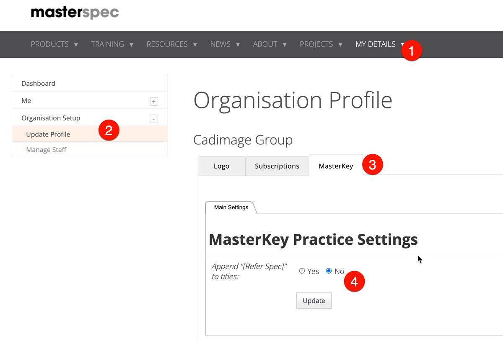
The "refer spec" is coming in from master spec.
Log into masterspec website, Click on My Details > Organisation Profile > MasterKey and turn off the Append "refer spec" to titles.
英文原文对照Official English Original
The "refer spec" is coming in from master spec.
Log into masterspec website, Click on My Details > Organisation Profile > MasterKey and turn off the Append "refer spec" to titles.
创建 Keynotes
Creating Keynotes
本文将向你展示如何创建一个 Keynote。
你会注意到我们已经设置好了分类（Category，例如 General 和 Site）以及子分类（Sub-Category，例如 Concrete、Masonry 和 Timber），它们为我们的 Keynotes 提供了结构化的顺序。设置分类有助于管理你的注释；不过在创建 Keynotes 之前你并不必须这样做。
- 通过 Cadimage> Keynotes> Keynotes Palette 打开 Keynotes 面板
**

**
- 在面板顶部的数据库（Database）区域，点击你希望添加新 Keynotes 位置的上方（本例中我们点击 3.03 Timber 子分类，这样 Keynote 就会出现在该项的正下方）。
提示： 如果 Keynote 没有添加到你想的位置，或者以后想移动它，你随时可以点击并拖动到新的位置。
- 点击 A 按钮添加一条新注释。在 Keynote Editing（Keynote 编辑）下，你可以为这条注释添加额外信息，包括标题（Title）、规范参考（Spec Reference）和描述（Description）。
提示：
- Description（描述）是添加与该 keynote 相关的详细信息的地方。
- Specification Reference（规范参考）是对外部/独立规范文档的引用，可以是 ID、产品代码或页码参考。
使用这些参数后，我们的 Keynotes 列表看起来如下：
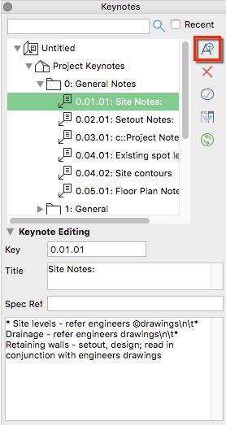
- 添加注释时你不需要关闭面板。点击 A 按钮时注释即被添加。
In this article we show you how to create a Keynote.
You will notice that we have set up Categories (such as General and Site); as well as Sub-Categories (such as Concrete, Masonry and Timber), which have provided a structured order around our Keynotes. Setting up Categories will help manage your notes; however you do not have to do this in order to create your Keynotes.
Read more about setting up and managing Keynote Categories
- Open the Keynote Palette by going to Cadimage> Keynotes> Keynotes Palette
**
**
- In the Database (top) area of the Palette, click above the point at which you want to add the new Keynote (in this example we will click on the 3.03 Timber Sub-Category in order to get the Keynote to appear just below this item).
Tip: If the Keynote is not added where you want, or if you want to move it later, you can always click and drag it into a new location.
- Click the A button to add a new Note. Under Keynote Editing, you will be able to add extra information to this note. Including a Tittle, Spec Reference and Description.
TIP:
- The Description is where the detailed information relating to the keynote is added.
- The Specification Reference is a reference to an external / separate Specification Document and can be an ID, produce code or page reference.
Using these parameters, our Keynotes List looks like this:
- You won't need to close your palette for the note to be added. It is added when you click the A button.
英文原文对照Official English Original
In this article we show you how to create a Keynote.
You will notice that we have set up Categories (such as General and Site); as well as Sub-Categories (such as Concrete, Masonry and Timber), which have provided a structured order around our Keynotes. Setting up Categories will help manage your notes; however you do not have to do this in order to create your Keynotes.
Read more about setting up and managing Keynote Categories
- Open the Keynote Palette by going to Cadimage> Keynotes> Keynotes Palette
**
**
- In the Database (top) area of the Palette, click above the point at which you want to add the new Keynote (in this example we will click on the 3.03 Timber Sub-Category in order to get the Keynote to appear just below this item).
Tip: If the Keynote is not added where you want, or if you want to move it later, you can always click and drag it into a new location.
- Click the A button to add a new Note. Under Keynote Editing, you will be able to add extra information to this note. Including a Tittle, Spec Reference and Description.
TIP:
- The Description is where the detailed information relating to the keynote is added.
- The Specification Reference is a reference to an external / separate Specification Document and can be an ID, produce code or page reference.
Using these parameters, our Keynotes List looks like this:
- You won't need to close your palette for the note to be added. It is added when you click the A button.
创建多页 Keynote 明细表
Creating Multiple Page Keynote Schedules
从 ARCHICAD 19 中的 Keynotes 5.20 版本开始，你可以让 Keynotes 明细表跨多个页面/布局延伸。
要做到这一点，打开你希望明细表起始的布局，然后像平常一样进入 Cadimage菜单> Keynotes > Create Schedule…。
在 Create Keynotes Schedule 对话框中，选择 Include（包含）All Keynotes（全部 Keynotes）、Only Keynotes used in the Project（仅项目中已使用的 Keynotes）或 Only Keynotes visible in any Layout（仅任一布局中可见的 Keynotes）。这样选择后，右上方的复选框将变为可用：
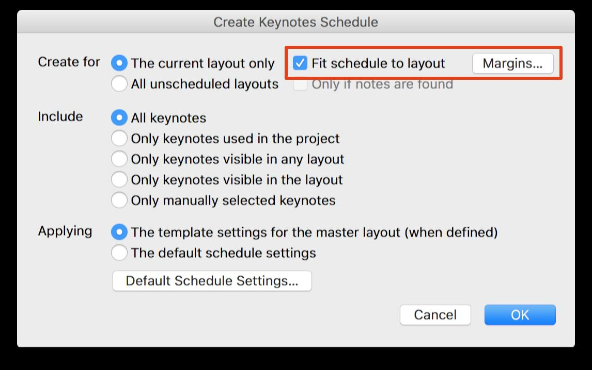
勾选 Fit Schedule to Layout（明细表适应布局）复选框，即可开启多布局跨页明细表功能。
如果你的布局有图框标题栏或其他需要留出空间的内容，点击 Margins（页边距）按钮，设置所需的偏移量，然后点击 OK。
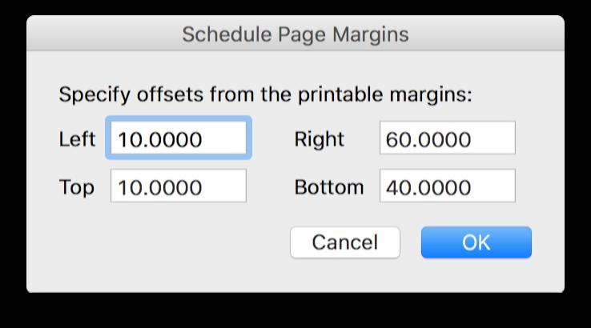
Create Keynote Schedule 中其余的设置与平常相同，按需修改明细表设置的施加方式，然后点击 OK 创建明细表。
Keynotes 工具现在开始计算它能在每个布局上放置多少 keynotes。这是一个相当复杂的任务，因此根据你排入的注释数量，完成时间可能从 10 秒到 1、2 分钟不等。
完成后，你应该会在当前布局上看到明细表的第一部分，并且在导航器中该布局下方会出现一系列新的布局，其中包含明细表的其余部分。
它们的行为与普通明细表相同，也可以以同样的方式编辑。唯一的区别是：
- 如果你更新明细表，必须等待它重新计算尺寸，因此更新明细表会稍微慢一些
- 现在既然有了多布局明细表，如果你删除了其中任何自动生成的布局，更新明细表时它们会被重新创建
Starting with Keynotes version 5.20 in ARCHICAD 19, you can have your Keynotes Schedules span across Multiple Pages/Layouts.
To do this, open the Layout that you want the Schedule to begin on, and then go to the Cadimagemenu> Keynotes > Create Schedule… as normal.
In the Create Keynotes Schedule dialog, choose to Include either All Keynotes, Only Keynotes used in the Project, or Only Keynotes visible in any Layout. When you do so, the checkbox above and to the right will become available:
Check the Fit Schedule to Layout box to turn on the Multi-Layout schedule spanning feature.
If your Layouts have a title block or other content that you need to allow room for, click the Margins button, set the offset/s you require, and click OK.
The rest of the setting in Create Keynote Schedule are the same as usual, so make any changes you require to the way the schedule settings are applied, and then click OK to create the Schedule.
The Keynotes tool will now begin calculating how much of your keynotes it can put onto each layout. This is a fairly complex task so, depending on how many notes you are scheduling, this can take anywhere from 10 seconds to a minute or 2 to complete.
Once it's done, you should see the first chunk of the schedule on the current layout, and a series of new layouts below this one in the navigator which contain the rest of the schedule.
These behave and can be edited in the same way as a normal schedule. The only differences are:
- If you update the schedule, you will have to wait for it to recalculate the sizes again, so updating schedule/s will take a bit longer
- And now that you have a multi-layout schedule on them, if you delete any of the layouts that were automatically generated, updating the schedule will re-create them
英文原文对照Official English Original
Starting with Keynotes version 5.20 in ARCHICAD 19, you can have your Keynotes Schedules span across Multiple Pages/Layouts.
To do this, open the Layout that you want the Schedule to begin on, and then go to the Cadimagemenu> Keynotes > Create Schedule… as normal.
In the Create Keynotes Schedule dialog, choose to Include either All Keynotes, Only Keynotes used in the Project, or Only Keynotes visible in any Layout. When you do so, the checkbox above and to the right will become available:
Check the Fit Schedule to Layout box to turn on the Multi-Layout schedule spanning feature.
If your Layouts have a title block or other content that you need to allow room for, click the Margins button, set the offset/s you require, and click OK.
The rest of the setting in Create Keynote Schedule are the same as usual, so make any changes you require to the way the schedule settings are applied, and then click OK to create the Schedule.
The Keynotes tool will now begin calculating how much of your keynotes it can put onto each layout. This is a fairly complex task so, depending on how many notes you are scheduling, this can take anywhere from 10 seconds to a minute or 2 to complete.
Once it's done, you should see the first chunk of the schedule on the current layout, and a series of new layouts below this one in the navigator which contain the rest of the schedule.
These behave and can be edited in the same way as a normal schedule. The only differences are:
- If you update the schedule, you will have to wait for it to recalculate the sizes again, so updating schedule/s will take a bit longer
- And now that you have a multi-layout schedule on them, if you delete any of the layouts that were automatically generated, updating the schedule will re-create them
编辑 Keynote
Editing a Keynote
要编辑或修改某个 Keynote 或 Keynotes 数据库：
- 在 ARCHICAD 中打开 Keynotes Palette（Keynotes 面板）（进入 Cadimage> Keynotes> Keynotes Palette）。

- 展开所需的数据库（如需要）并选中你想编辑的 Keynote：
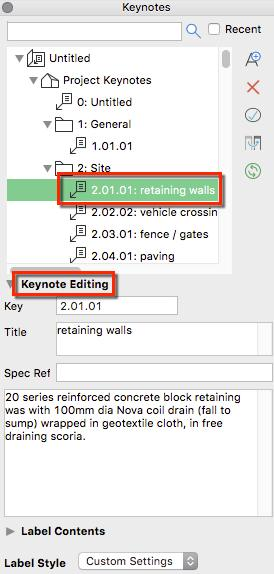
- 现在你应该能在 ‘Keynote Editing’（Keynote 编辑）字段中看到该 Keynote 的详情（上面已圈出）
对字段所做的任何更改都会自动保存到数据库。但是，如果其中任何 keynote 已经作为标签（Label）放置过，你需要运行 Cadimage> Keynotes> Audit Labels…（审核标签）工具，以确保所有标签都更新为最新数据。
To edit or modify a Keynote or a Keynote Database:
- In ARCHICAD, open the Keynotes Palette (go to Cadimage> Keynotes> Keynotes Palette).
- Expand the required Database (if required) andselect the Keynote you wish to edit:
- You should now see the details of the Keynote in the 'Keynote Editing' field (circled, above)
Any changes made to the fields are automatically saved to the database. However, if any of the keynotes have already been placed as Labels, you will need to run the Cadimage> Keynotes> Audit Labels… tool to ensure all Labels are updated with the latest data.
英文原文对照Official English Original
To edit or modify a Keynote or a Keynote Database:
- In ARCHICAD, open the Keynotes Palette (go to Cadimage> Keynotes> Keynotes Palette).
- Expand the required Database (if required) andselect the Keynote you wish to edit:
- You should now see the details of the Keynote in the 'Keynote Editing' field (circled, above)
Any changes made to the fields are automatically saved to the database. However, if any of the keynotes have already been placed as Labels, you will need to run the Cadimage> Keynotes> Audit Labels… tool to ensure all Labels are updated with the latest data.
认识 Keynotes 面板
Getting to know the Keynote Palette.
要在 ARCHICAD 中打开 Keynotes 面板，请进入 Ci Tools > Keynotes> Keynotes Palette.（Keynotes 面板）
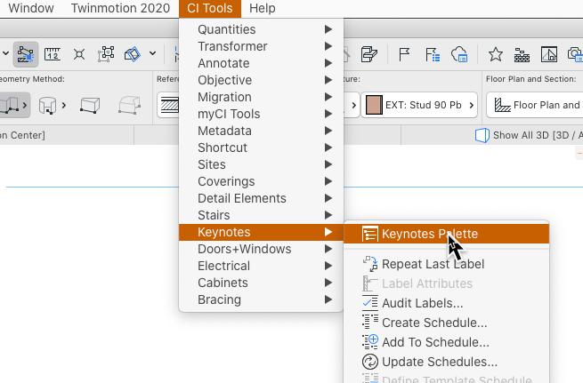
Keynotes 面板
打开面板后，你会注意到它被分为 3 个区域，如下图所示：
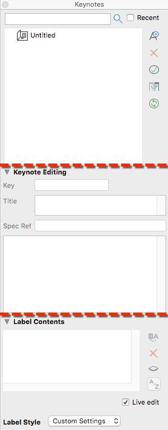
- 顶部区域显示 keynotes 的数据库（此处为空）以及一些管理功能
- 中间区域用于 Keynote Editing（Keynote 编辑）
- Label Contents（标签内容）区域用于放置和编辑 Keynotes。
你可以随时通过折叠箭头隐藏 Keynote Editing 或 Label Contents 区域。
Keynotes 数据库
不同来源的标识方式如下：
内容存储在项目中（不链接到外部来源）。通过导入文件或使用"
Create a new note"（创建新注释）按钮直接创建注释来填充。
内容链接到在线来源（目前仅 NZ 的 Masterspec）。
内容链接到外部文件。通过链接到外部文件来填充。
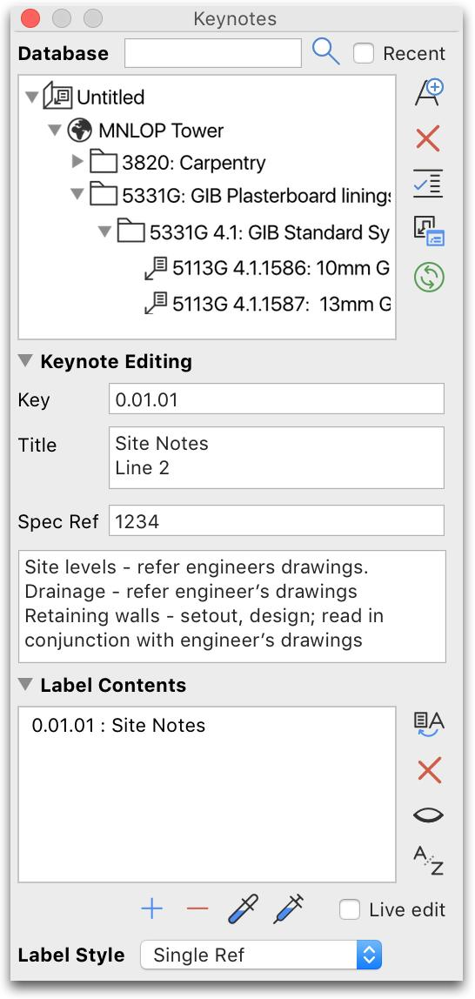
图标
顶部面板中的图标按钮具有以下功能：
搜索匹配输入文本的 keynotes
创建新注释（参见这里：创建 Keynotes）
删除选中的注释
审核所有 keynote 标签
管理注释（显示模态 Keynotes Manager 对话框，用于导入/导出等）
更新所有链接的 keynotes（Masterspec 或外部文件）
下方面板中的图标具有以下功能：
将选中的注释添加到当前标签
从当前标签移除选中的注释
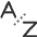
在当前标签中隐藏选中的注释（切换为
以显示）
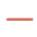
对当前标签中的注释进行排序的开关
Label Contents 面板下的图标仅在未勾选 Live edit（实时编辑）时出现：
将选中的注释添加到所有选中的标签
从所有选中的标签中移除选中的注释
从所有选中的标签获取全部注释
%%IMG21%%
设置所有选中标签中的注释
分类与 Keynotes
%%IMG22%%
任何带有子项的条目都是一个分类（文件夹图标），任何没有子项的条目就是一个 keynote。把某个条目拖到另一个原本没有子项的条目之下，会把它变成一个分类。
To open the Keynotes palette in ARCHICAD, go to Ci Tools > Keynotes> Keynotes Palette.
Keynote Palette
When you open the palette, you will notice that it is divided into 3 sections, shown in the graphic below:
- The top section displays the Database of keynotes (empty) and some management functions
- The middle section is where Keynote Editing is carried out
- The Label Contents section is used when placing and editing Keynotes.
You can hide the Keynote Editing or Label Contents areas at any time by using the twirl-down arrow.
Keynotes Database
Different sources will be identified as follows:
The content is stored in the project (no link to an external source). This is populated by importing a file or creating notes directly using the "
Create a new note" button
The content is linked to an online source (currently only Masterspec & for NZ)
The content is linked to an external file. This is populated by linking to an external file.
Icons
The icon buttons in the top panel carry out the following functions:
Search for keynotes matching the entered text
Create a new note (Refer here on Creating Keynotes)
Delete the selected note(s)
Audit all keynote labels
Manage notes (display the modal Keynote Manager dialog for import/export etc)
Update all linked keynotes (Masterspec or external file)
The icons in the lower panel carry out the following functions:
Add the selected note(s) to the current label
Remove the selected note(s) from the current label
Hide the selected note(s) in the current label (switches to
to show)
A toggle switch for sorting notes in the current label
The icons under the Label Contents panel only appear when Live edit is unchecked:
Add the selected note(s) to all selected labels
Remove the selected note(s) from all selected labels
Get all the notes from all selected labels
%%IMG21%%
Set the notes in all selected labels
Categories and keynotes
Working with Categories in Keynotes
%%IMG22%%
Any item with children will be a category (folder icon), Any item without children is a keynote. Dragging an item under another item that previously had no children will transform it into a category.
英文原文对照Official English Original
To open the Keynotes palette in ARCHICAD, go to Ci Tools > Keynotes> Keynotes Palette.
Keynote Palette
When you open the palette, you will notice that it is divided into 3 sections, shown in the graphic below:
- The top section displays the Database of keynotes (empty) and some management functions
- The middle section is where Keynote Editing is carried out
- The Label Contents section is used when placing and editing Keynotes.
You can hide the Keynote Editing or Label Contents areas at any time by using the twirl-down arrow.
Keynotes Database
Different sources will be identified as follows:
The content is stored in the project (no link to an external source). This is populated by importing a file or creating notes directly using the "
Create a new note" button
The content is linked to an online source (currently only Masterspec & for NZ)
The content is linked to an external file. This is populated by linking to an external file.
Icons
The icon buttons in the top panel carry out the following functions:
Search for keynotes matching the entered text
Create a new note (Refer here on Creating Keynotes)
Delete the selected note(s)
Audit all keynote labels
Manage notes (display the modal Keynote Manager dialog for import/export etc)
Update all linked keynotes (Masterspec or external file)
The icons in the lower panel carry out the following functions:
Add the selected note(s) to the current label
Remove the selected note(s) from the current label
Hide the selected note(s) in the current label (switches to
to show)
A toggle switch for sorting notes in the current label
The icons under the Label Contents panel only appear when Live edit is unchecked:
Add the selected note(s) to all selected labels
Remove the selected note(s) from all selected labels
Get all the notes from all selected labels
%%IMG21%%
Set the notes in all selected labels
Categories and keynotes
Working with Categories in Keynotes
%%IMG22%%
Any item with children will be a category (folder icon), Any item without children is a keynote. Dragging an item under another item that previously had no children will transform it into a category.
如何在 Keynotes 中替换标签
How to Replace Labels in Keynote
0.- 打开 Keynotes 面板（Keynote Palette）。
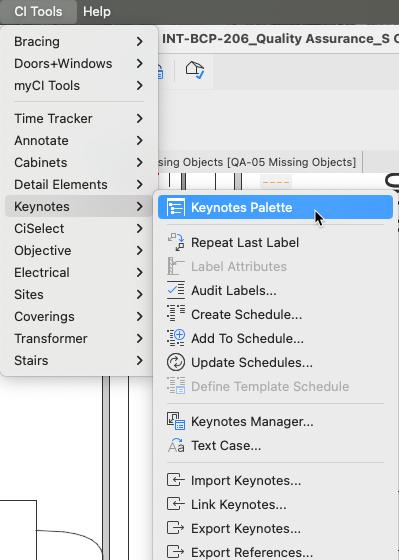
1.- 打开 Keynotes 管理器（Keynotes Manager）。
2.- 选择要删除/替换的注释。
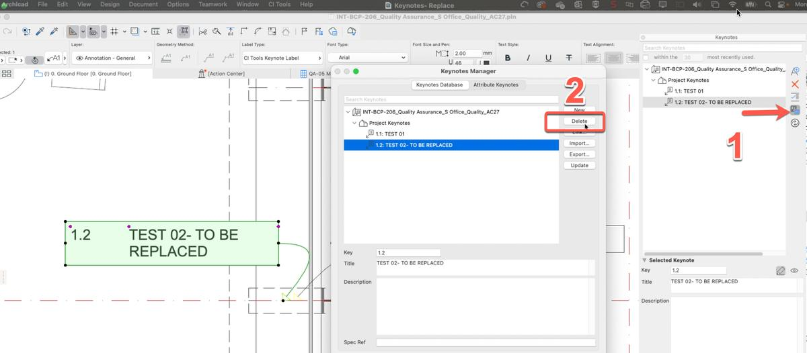
3.- 打开 Audit（审核）窗口。
4.- 找到并选中那个孤立的标签。
5.- 点击 Replace（替换）。
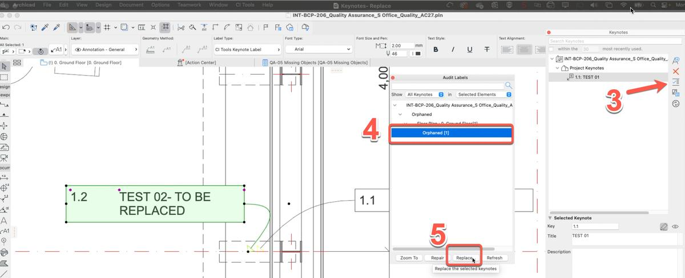
6.- 选择你希望用来替换已删除标签的标签，然后点击 ok。
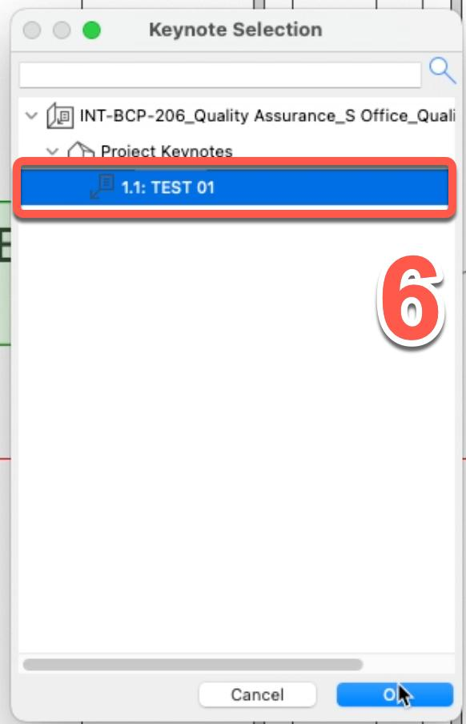
7.- 会弹出一个警告窗口，点击 ok 完成整个过程。
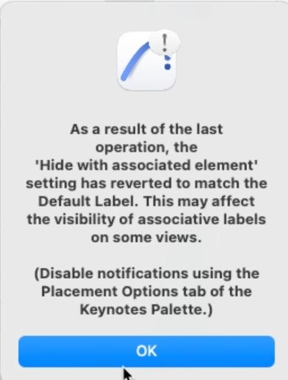
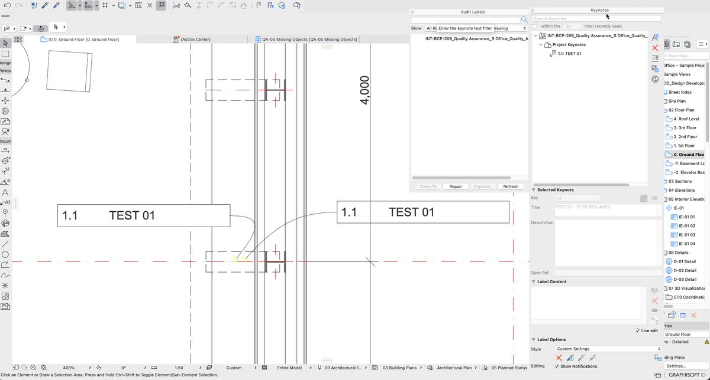
0.- Open the Keynote Palette.
1.- Open the Keynotes Manager.
2.- Select the Note to be deleted/replaced.
3.- Open the Audit window.
4.- Identify and select the Orphaned label.
5.- Click on Replace.
6.- Select the label you wish to replace the deleted label, then click ok.
7.- A warning window will pop up and click ok to complete the process.
英文原文对照Official English Original
0.- Open the Keynote Palette.
1.- Open the Keynotes Manager.
2.- Select the Note to be deleted/replaced.
3.- Open the Audit window.
4.- Identify and select the Orphaned label.
5.- Click on Replace.
6.- Select the label you wish to replace the deleted label, then click ok.
7.- A warning window will pop up and click ok to complete the process.
如何配置 Keynotes 标签
How to configure your Keynote Label
标签是把数据库中的 Keynote 信息传递到项目视图（平面图、剖面图、立面图等）中所使用的方法。
标签使用标准的 ARCHICAD Label Tool（标签工具），另外增加了一个 Cadimage 面板来控制 Keynotes 标签配置。
- 要查看标签的默认设置，在 Toolbox（工具箱）中双击 Label Tool（标签工具）：
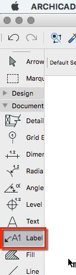
- 这将打开 Label Default Settings（标签默认设置）对话框
- 在 Type and Preview（类型与预览）区域，你会看到 Cadimage Keynote Label 选项（见下图）
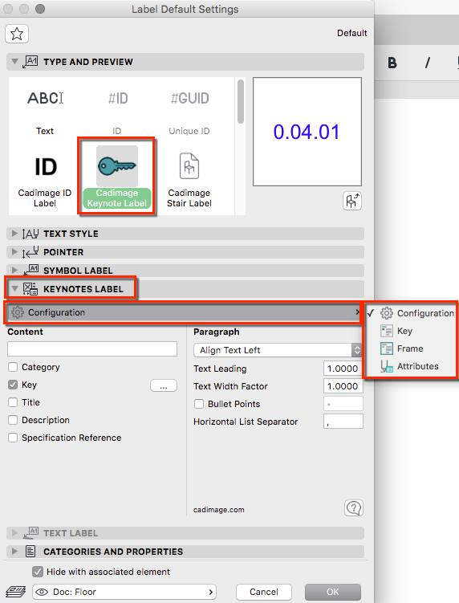
- 你还会看到一个名为 ‘Cadimage Keynote Label – Settings’（Cadimage Keynote 标签 – 设置）的区域（上方）
提示：如果你看不到这个区域，说明你可能没有安装 Keynotes。
- 在 Content（内容）区域，你会看到定义 Keynote 显示方式的选项：
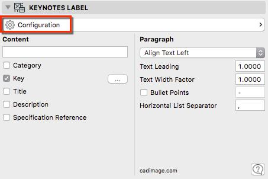
在这里你可以选择显示以下选项（可用上方的复选框打开/关闭）：
- Content（内容）——你可输入的自定义文本
- Category（分类）——你的 keynote 所属分组的分类标题
- Key（编号）——你的 keynote 使用的唯一参考编号
- Title（标题）——你的 keynote 的标题 / 标题行
- Description（描述）——你所列出条目的详细规范说明
- Specification Reference（规范参考）——可引用与你的编号不同的外部系统参考
示例： 一个独立放置的、指向内墙的 Keynote：
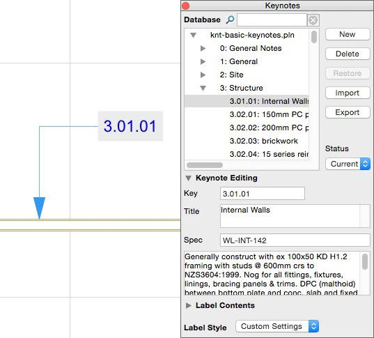
在上图中你可以看到只有 Key 显示在 Keynote 上。
返回第 4 步所示的 Settings 区域，勾选 Category 和 Title 复选框，就可以开启这些内容区域，效果如下：
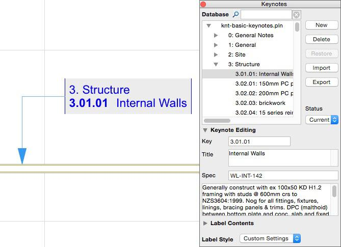
Labels are the method used to transfer Keynote information into project views (plans, sections, elevations etc) from the database.
Labels use the standard ARCHICAD Label Tool with the addition of a Cadimage Palette to control the Keynotes Label Configuration.
- To view the default settings for a Label, double click on the Label Tool in the Toolbox:
- This will open the Label Default Settings dialogue
- Under the Type and Preview area you will see the Cadimage Keynote Label option (see below)
- You will also see an area called 'Cadimage Keynote Label – Settings' (above)
TIP: If you cannot see this area you may not have Keynotes installed.
- In the Content area you will see the options that define how your Keynote will look:
Here you can choose to display the following options (you can switch them on/off using the checkboxes shown above):
- Content – this is custom text you can enter
- Category – the category title for the group your keynote belongs to
- Key – the unique reference used by your keynote
- Title – the title / heading for your keynote
- Description – the detailed description of specification of the item you are listing
- Specification Reference – this can refer to an external systems reference different from your key
Example: A Keynote that has been independently placed, referring to an internal wall:
In the image above you can see that only the Key is appearing on the Keynote.
By returning to the Settings area shown in Step 4, and ticking the Category and Title checkboxes, we can turn on those areas of content as can be seen below:
英文原文对照Official English Original
Labels are the method used to transfer Keynote information into project views (plans, sections, elevations etc) from the database.
Labels use the standard ARCHICAD Label Tool with the addition of a Cadimage Palette to control the Keynotes Label Configuration.
- To view the default settings for a Label, double click on the Label Tool in the Toolbox:
- This will open the Label Default Settings dialogue
- Under the Type and Preview area you will see the Cadimage Keynote Label option (see below)
- You will also see an area called 'Cadimage Keynote Label – Settings' (above)
TIP: If you cannot see this area you may not have Keynotes installed.
- In the Content area you will see the options that define how your Keynote will look:
Here you can choose to display the following options (you can switch them on/off using the checkboxes shown above):
- Content – this is custom text you can enter
- Category – the category title for the group your keynote belongs to
- Key – the unique reference used by your keynote
- Title – the title / heading for your keynote
- Description – the detailed description of specification of the item you are listing
- Specification Reference – this can refer to an external systems reference different from your key
Example: A Keynote that has been independently placed, referring to an internal wall:
In the image above you can see that only the Key is appearing on the Keynote.
By returning to the Settings area shown in Step 4, and ticking the Category and Title checkboxes, we can turn on those areas of content as can be seen below:
如何删除 Keynote
How to delete a Keynote
要把某个 Keynote 设为已删除：
- 在 ARCHICAD 中打开 Keynotes 面板（进入 Cadimage> Keynotes> Keynotes Palette）

- 选中你想删除的 Keynote：
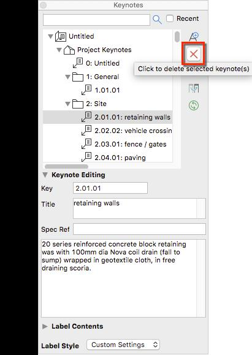
- 点击上面所示的 X 按钮。
如果你删除的任何 Keynotes 已经作为标签放置过，你需要运行 Cadimage> Keynotes> Audit Labels…（审核标签）工具，以确保所有标签都被更新。Audit Labels 工具会给你选项，可以移除标签，或用另一个替代已删除的 keynote。
In order to set a Keynote as Deleted:
- Open the Keynotes Palette in ARCHICAD (go to Cadimage> Keynotes> Keynotes Palette)
- Select the Keynote you wish to Delete:
- Click on the Xbutton shown above.
If you delete any Keynotes have already been placed as Labels, you will need to run the Cadimage> Keynotes> Audit Labels… tool to ensure all Labels are updated. The Audit Labels tool will give you the option to remove the label or replace the deleted keynote with an alternative.
英文原文对照Official English Original
In order to set a Keynote as Deleted:
- Open the Keynotes Palette in ARCHICAD (go to Cadimage> Keynotes> Keynotes Palette)
- Select the Keynote you wish to Delete:
- Click on the Xbutton shown above.
If you delete any Keynotes have already been placed as Labels, you will need to run the Cadimage> Keynotes> Audit Labels… tool to ensure all Labels are updated. The Audit Labels tool will give you the option to remove the label or replace the deleted keynote with an alternative.
导入示例数据库
Import a Sample Database
在每次安装 Cadimage Keynotes 时，我们都会附带一个示例 Keynotes 数据库，你可以使用或自定义它来创建自己的结构和内容。要使用该示例数据库：
- 进入 Cadimage>Keynotes>Import Keynotes...
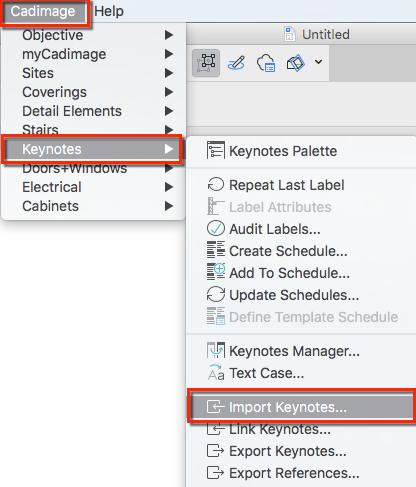
- 从与你操作系统相对应的以下文件位置导入 Cadimage Keynotes.keynotes 数据库：
- Windows: Program Files> GRAPHISOFT> ARCHICAD 20> CadimageTools Extras
- Mac OSX: Applications> GRAPHISOFT> ARCHICAD 20> CadimageTools Extras
- 现在你会看到以下对话框：
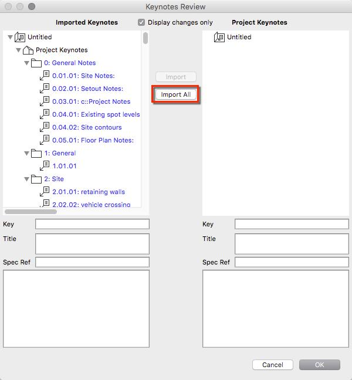
如果你想导入整个数据库，可以点击 Import All（全部导入）。不过，你也可以展开各章节，用标准的 Windows / MacOS 命令（Shift+点击 或 Ctrl+点击 / Cmd+点击）选择部分内容，但请确保在点击 OK 前勾选 Import（导入）复选框。
示例数据库将被导入，你可以使用并自定义它。
方式二：从 Excel 或外部数据库导入示例数据库
在每次安装 Cadimage Keynotes 时，我们都会附带一个示例 .csv（逗号分隔值）数据库，你可以使用或自定义它来创建自己的结构和内容。要使用该示例数据库，请使用上面概述的相同方法。补充信息见下文。
- 从计算机上的以下位置之一（取决于你的操作系统）导入 Cadimage Keynotes.csv 数据库：
- Windows = Program Files> GRAPHISOFT> ARCHICAD 20> CadimageTools Extras
- Mac OSX = Applications> GRAPHISOFT> ARCHICAD 19> CadimageTools Extras
- 点击 Files Type（文件类型）下拉列表（Windows）或 Enable（启用）下拉列表（Mac OSX）（如下图所示）：
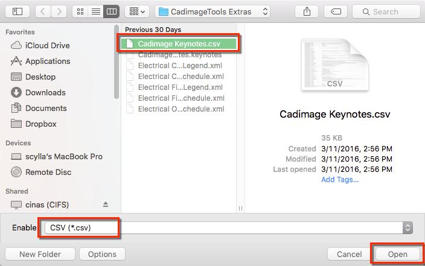
提示： 你可能会注意到 .txt 是另一种支持导入数据库信息的格式。
- 选择 .csv 格式
5.选择 Cadimage Keynotes.csv
6.点击 Open（打开）
- 现在你会看到以下对话框，它允许你配置数据导入：
请确保 Data Application（数据应用）字段与列名（Column Name）匹配。
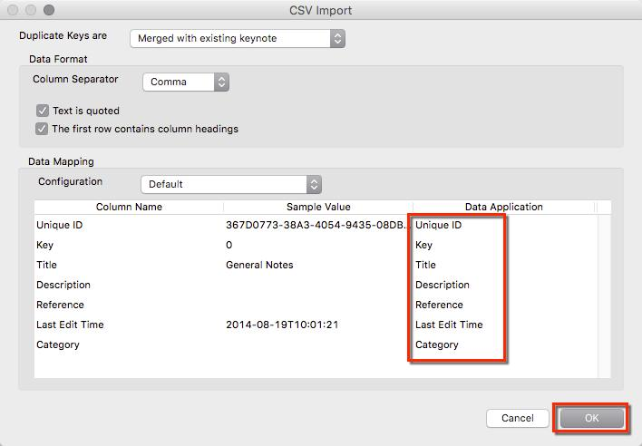
- 点击 OK。
- 现在你会看到以下对话框：
%%IMG4%%
10.选择你想导入的注释，然后点击 OK。
With every installation of Cadimage Keynotes, we include a sample Keynotes database that can be used or customised to create your own structure and content. To use this sample database:
- Go to Cadimage>Keynotes>Import Keynotes...
- Import the Cadimage Keynotes.keynotes database from the following file location relevant to your operating system:
- Windows: Program Files> GRAPHISOFT> ARCHICAD 20> CadimageTools Extras
- Mac OSX: Applications> GRAPHISOFT> ARCHICAD 20> CadimageTools Extras
- You should now see the following dialogue:
If you want to import the entire database you can click onImport All. However, you can select parts of the content by expanding the sections and select using standard Windows / MacOS commands (Shit+click or Ctrl+click / Cmd+click) but make sure you click the Import check box before clicking OK.
The sample database will be imported and available for you to use and customise.
Option two: Import a sample database from Excel or an external database
With every installation of Cadimage Keynotes, we include a sample .csv (comma separated values) database that can be used or customised to create your own structure and content. To use this sample database, use the same method outlined above. Extra information below.
- Import the Cadimage Keynotes.csv database from one of the following locations on your computer (depending on your Operating System):
- Windows = Program Files> GRAPHISOFT> ARCHICAD 20> CadimageTools Extras
- Mac OSX = Applications> GRAPHISOFT> ARCHICAD 19> CadimageTools Extras
- Click on the Files Type pull down (Windows) or Enable pull down (Mac OSX) (shown below):
TIP: You may notice .txt is a further format that is supported for importing database information.
- Choose the.csv format
5.Select the Cadimage Keynotes.csv
6.Click Open
- You should now see the dialogue below which allows you to configure the import of your data:
Please make sure the Data Application fields match the Column Name.
- Click OK.
- You should now see the dialogue below:
%%IMG4%%
10.Select the Notes you would like to import and click OK.
英文原文对照Official English Original
With every installation of Cadimage Keynotes, we include a sample Keynotes database that can be used or customised to create your own structure and content. To use this sample database:
- Go to Cadimage>Keynotes>Import Keynotes...
- Import the Cadimage Keynotes.keynotes database from the following file location relevant to your operating system:
- Windows: Program Files> GRAPHISOFT> ARCHICAD 20> CadimageTools Extras
- Mac OSX: Applications> GRAPHISOFT> ARCHICAD 20> CadimageTools Extras
- You should now see the following dialogue:
If you want to import the entire database you can click onImport All. However, you can select parts of the content by expanding the sections and select using standard Windows / MacOS commands (Shit+click or Ctrl+click / Cmd+click) but make sure you click the Import check box before clicking OK.
The sample database will be imported and available for you to use and customise.
Option two: Import a sample database from Excel or an external database
With every installation of Cadimage Keynotes, we include a sample .csv (comma separated values) database that can be used or customised to create your own structure and content. To use this sample database, use the same method outlined above. Extra information below.
- Import the Cadimage Keynotes.csv database from one of the following locations on your computer (depending on your Operating System):
- Windows = Program Files> GRAPHISOFT> ARCHICAD 20> CadimageTools Extras
- Mac OSX = Applications> GRAPHISOFT> ARCHICAD 19> CadimageTools Extras
- Click on the Files Type pull down (Windows) or Enable pull down (Mac OSX) (shown below):
TIP: You may notice .txt is a further format that is supported for importing database information.
- Choose the.csv format
5.Select the Cadimage Keynotes.csv
6.Click Open
- You should now see the dialogue below which allows you to configure the import of your data:
Please make sure the Data Application fields match the Column Name.
- Click OK.
- You should now see the dialogue below:
%%IMG4%%
10.Select the Notes you would like to import and click OK.
Keynote 标签类型
Keynote Label Types
标签是数据库条目在项目中的可视化表示，可以在项目平面图、剖面图或立面图上查看。
标签有两种类型：
- Independent Labels（独立标签）可以放置在任何项目视图或布局中，并独立地放置在你的项目中。它们可以由单个 Keynote 或多个 Keynote 组成。
- Element Labels（构件标签）放置时与某个 ARCHICAD 构件（如墙体、屋顶、填充或对象）建立链接。在这种情况下，标签会显示与该构件本身相关联的 Keynotes，或与该构件所使用的任何属性（复合体、填充或建筑材料等）相关联的 Keynotes。构件标签放置后，也可以直接从数据库中添加 Keynotes。
需要认识到的是，独立标签和构件标签看起来是一样的；两者都可以显示 Key、Title、Description 和 Specification Reference 的任意组合。
Labels are the visual representation of a database entry in our project, and may be viewed on your project plan, section or elevation.
There are two types of labels:
- Independent Labels can be placed in any project view or layout, and are placed independently in your project. They may consist of single Keynotes or multiple Keynotes.
- Element Labels are placed with a link to an ARCHICAD element (such as a wall, roof, fill or object). In this case, the label will display Keynotes that are associated with either the element itself or with any attribute used by the element (a composite, fill or building material etc). An Element Label, once placed, can also have Keynotes added directly from the database.
It is important to realise that Independent and Element Labels look the same; and can both display any combination of the Key, Title, Description, and Specification Reference.
英文原文对照Official English Original
Labels are the visual representation of a database entry in our project, and may be viewed on your project plan, section or elevation.
There are two types of labels:
- Independent Labels can be placed in any project view or layout, and are placed independently in your project. They may consist of single Keynotes or multiple Keynotes.
- Element Labels are placed with a link to an ARCHICAD element (such as a wall, roof, fill or object). In this case, the label will display Keynotes that are associated with either the element itself or with any attribute used by the element (a composite, fill or building material etc). An Element Label, once placed, can also have Keynotes added directly from the database.
It is important to realise that Independent and Element Labels look the same; and can both display any combination of the Key, Title, Description, and Specification Reference.
Keynotes 文本大小写设置
Keynotes Text Case Settings
Keynotes 文本大小写设置允许用户为 keynotes 的标题和描述设置大小写（作为偏好），并可指定例外情况，例如：全部大写，但数字后面的字母 ‘mm’ 除外（这样尺寸会显示为 100mm 而不是 100MM）。
你可以使用菜单项 Cadimage > Keynotes > Text Case（文本大小写）来设置这些偏好
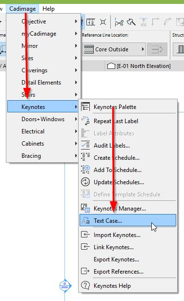
选中后会显示一个偏好设置对话框。
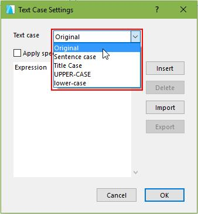
顶部的 Text case（文本大小写）菜单决定应用于所有文本的大小写。选项有：
- Original（原始）：文本保持输入时的样子（不改变大小写）
- Sentence case（句首大写）：每个新句子以大写字母开头，其余为小写
- Title case（标题大写）：每个单词以大写字母开头，其余为小写
- Upper-case（全大写）：全部大写
- Lower-case（全小写）：全部小写
如果用户希望应用下面列表中定义的任何特殊情况，则 Apply special cases（应用特殊情况）复选框会被勾选。
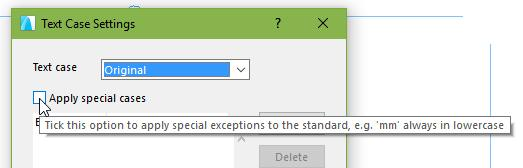
底部的列表包含所有可能与标准文本大小写不同的文本，例如：即使应用全大写也仍显示为 ‘mm’ 的单位，或应用标题大写时显示为 ‘NZS’。
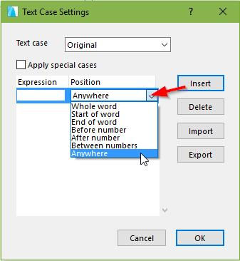
- 第一列的 Expression（表达式）是按用户所要求的大小写书写的文本。
- Position（位置）列限制该文本可能出现的位置。例如，我们不希望像 ‘mm’ 这样的例外导致出现 ‘COmmENT’ 这类单词，因此可以规定它的位置应为 ‘After number’（数字之后）。
全部可选范围包括：
- Whole word（完整单词）：只有完全由空白或标点字符包围的文本才会被匹配，例如 ‘a word example’ 中的 ‘word’
- Before number（数字之前）：只有位于数字之前的文本才会被匹配，例如 ‘NZS3604’ 中的 ‘NZS’
- After number（数字之后）：只有位于数字之后的文本才会被匹配，例如 ‘100mm’ 中的 ‘mm’
- Between number（数字之间）：只有位于两个数字之间的文本才会被匹配，例如 ‘100x50’ 中的 ‘x’
- Start of word（单词开头）：只有位于完整单词开头的文本才会被匹配，例如 ‘GIBboard’ 中的 ‘GIB’
- End of word（单词结尾）：只有位于完整单词结尾的文本才会被匹配，例如 ‘GIBBoard’ 中的 ‘Board’
- Anywhere（任意位置）：匹配到的文本出现在任何位置都将被替换，不加限制
如果表达式包含非字母字符，例如标点符号、数字等，位置应始终设为 Anywhere（任意位置）。插件会警告用户并自动切换到 Anywhere。这是因为数字/字母/标点的混合在其他任何上下文中都没有意义。
示例
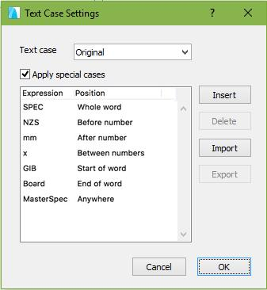
偏好设置更改后，面板内容会自动刷新。随后可以使用审核（audit）把更新后的文本应用到任何已放置的标签上。该更改不会永久写入数据库，因此切回 Original 会看到原始文本被恢复。但是，如果在应用大小写更改期间你编辑了标题或描述，那么输入的任何内容都会变成永久的（即屏幕上显示的样子就成为原始内容）。
新西兰 Masterspec 用户注意事项：
Masterspec 的 keynotes 在数据库中始终保持不变，因为它们无法被编辑；不过上面概述的偏好设置仍然会生效。
Keynotes Text Case Settings allow the users to set the case for the title and description of keynotes (as a preference) and to specify exceptions, e.g. all upper-case except for the letters ‘mm’ following a number (so dimensions come out as 100mm rather than 100MM).
You can set up these preferences using the menu item Cadimage > Keynotes > Text Case
It displays a preferences dialog when selected.
The Text case menu at the top determine the case to be applied to all the text. Options are:
- Original: the text is left as entered (no change of case)
- Sentence case: Every new sentence starts with an upper-case letter and the remainder is lower-case
- Title case: Every word starts with an upper case letter and the remainder is lower-case
- Upper-case: All upper-case
- Lower-case: All lower-case
The Apply special cases checkbox is ticked if the user wants to apply any of the special case defined in the list below.
The list at the bottom contains all text that may differ from the standard text case, e.g. showing the unit as ‘mm’ even when upper-case is applied or ’NZS’ when title-case is applied.
- The Expression in the first column is the text written in the case required by the user.
- The Position column restricts where occurrences of that text might appear. For example, we don’t want an exception like ‘mm’ to result in words like ‘COmmENT’, so we could state that it’s position should be ‘After number’.
The full range of options includes:
- Whole word: Only text fully bounded by white-space or punctuation characters will be targeted, e.g. ‘word’ in ‘a word example’
- Before number: Only text positioned before a number will be targeted, e.g. ’NZS’ in 'NZS3604’
- After number: Only text positioned after a number will be targeted, e.g. ‘mm’ in ‘100mm'
- Between number: Only text positioned between numbers will be targeted, e.g. ‘x’ in ‘100x50’
- Start of word: Only text positioned at the beginning of a whole word will be targeted, e.g. ‘GIB’ in ‘GIBboard’
- End of word: Only text positioned at the end of a whole word will be targeted, e.g. ‘Board’ in GIBBoard’
- Anywhere: This will replace matching text found anywhere, with no restriction
If an expression contains non-letter characters, e.g. punctuation, numbers etc, the position should always be set to Anywhere. The add-on will warn the user and switch to Anywhere automatically. This is because mixtures of numbers/letter/punctuation wouldn’t make sense in any of the other contexts.
Example
When the preferences are changed, the palette contents will automatically refresh. An audit can then be used to apply the updated text to any placed labels. The change is not permanent in the database, so switching back to Original will see the original text restored. However, if you edit a title or description while a change of case is applied, anything you enter becomes permanent (i.e. the way it looks on the screen becomes the original).
Considerations for New Zealand users of Masterspec:
Masterspec keynotes will always remain unchanged within the database because you can’t edit them, however, the Preferences outlined above will still be applied.
英文原文对照Official English Original
Keynotes Text Case Settings allow the users to set the case for the title and description of keynotes (as a preference) and to specify exceptions, e.g. all upper-case except for the letters ‘mm’ following a number (so dimensions come out as 100mm rather than 100MM).
You can set up these preferences using the menu item Cadimage > Keynotes > Text Case
It displays a preferences dialog when selected.
The Text case menu at the top determine the case to be applied to all the text. Options are:
- Original: the text is left as entered (no change of case)
- Sentence case: Every new sentence starts with an upper-case letter and the remainder is lower-case
- Title case: Every word starts with an upper case letter and the remainder is lower-case
- Upper-case: All upper-case
- Lower-case: All lower-case
The Apply special cases checkbox is ticked if the user wants to apply any of the special case defined in the list below.
The list at the bottom contains all text that may differ from the standard text case, e.g. showing the unit as ‘mm’ even when upper-case is applied or ’NZS’ when title-case is applied.
- The Expression in the first column is the text written in the case required by the user.
- The Position column restricts where occurrences of that text might appear. For example, we don’t want an exception like ‘mm’ to result in words like ‘COmmENT’, so we could state that it’s position should be ‘After number’.
The full range of options includes:
- Whole word: Only text fully bounded by white-space or punctuation characters will be targeted, e.g. ‘word’ in ‘a word example’
- Before number: Only text positioned before a number will be targeted, e.g. ’NZS’ in 'NZS3604’
- After number: Only text positioned after a number will be targeted, e.g. ‘mm’ in ‘100mm'
- Between number: Only text positioned between numbers will be targeted, e.g. ‘x’ in ‘100x50’
- Start of word: Only text positioned at the beginning of a whole word will be targeted, e.g. ‘GIB’ in ‘GIBboard’
- End of word: Only text positioned at the end of a whole word will be targeted, e.g. ‘Board’ in GIBBoard’
- Anywhere: This will replace matching text found anywhere, with no restriction
If an expression contains non-letter characters, e.g. punctuation, numbers etc, the position should always be set to Anywhere. The add-on will warn the user and switch to Anywhere automatically. This is because mixtures of numbers/letter/punctuation wouldn’t make sense in any of the other contexts.
Example
When the preferences are changed, the palette contents will automatically refresh. An audit can then be used to apply the updated text to any placed labels. The change is not permanent in the database, so switching back to Original will see the original text restored. However, if you edit a title or description while a change of case is applied, anything you enter becomes permanent (i.e. the way it looks on the screen becomes the original).
Considerations for New Zealand users of Masterspec:
Masterspec keynotes will always remain unchanged within the database because you can’t edit them, however, the Preferences outlined above will still be applied.
Teamwork 中的 Keynotes
Keynotes in Teamwork
预留（Reservation）
与 Teamwork 环境中的所有工具一样，首先需要理解的是：要进行任何更改，都必须先进行预留（Reserved）。
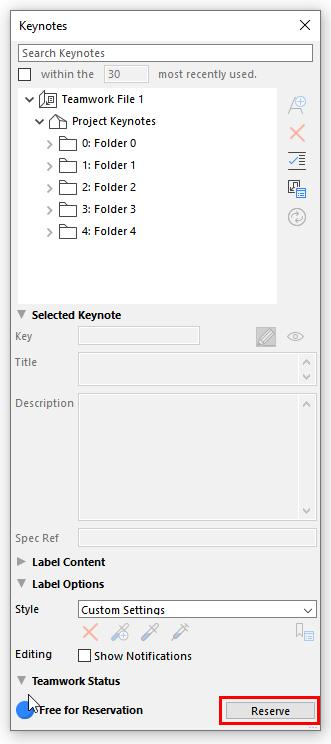
做法是点击 Keynotes 面板右下角的 ‘Reserve’（预留）按钮（要显示 Keynotes 面板，可像平常一样通过激活屏幕顶部 Menu 选项卡中的 CI Tools 下拉菜单来激活）。
Keynotes 面板被预留之后，就可以对 Keynotes 数据库进行更改。你能做出的更改取决于你在 BIMCloud 服务器上的权限（见下文）。Reserve 按钮现已替换为 Release 按钮。在编辑、添加、删除或审核 Keynote 标签之后，必须执行 Release，才能让其他用户编辑 Keynotes 数据库。
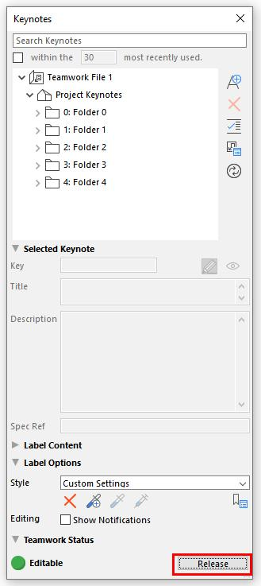
注意：
请注意目前没有 Request（请求）按钮，占用预留的 Teamwork 用户需要通过标准的 Teamwork 消息系统来请求 Release Keynotes。
在 Keynotes 面板被预留期间，Keynotes 面板底部的 ‘Reserved by’（预留者）对话框会向项目中的所有其他用户显示预留它的 Teamwork 用户名。
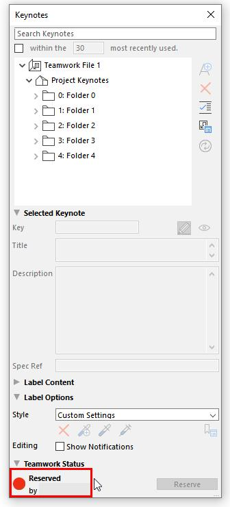
与单机项目环境类似，可以通过 Keynotes 面板右上角的 Keynotes manager 按钮激活 Keynotes 管理器，也可以通过 Keynotes 菜单项下的 CITools 下拉菜单来激活。
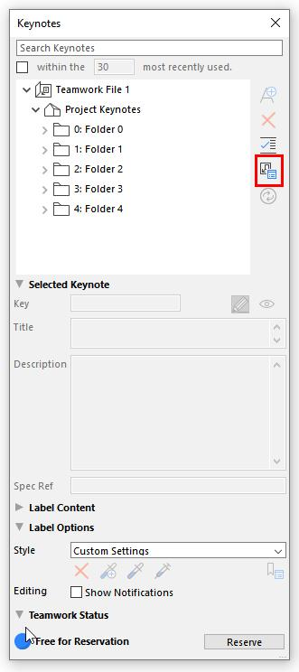
此后所有标准的 Keynote 编辑功能都可以通过该界面使用：
- New（新建）
- Delete（删除）
- Link（链接）
- Import（导入）
- Export（导出）
- Update（更新）
……如下图所示：
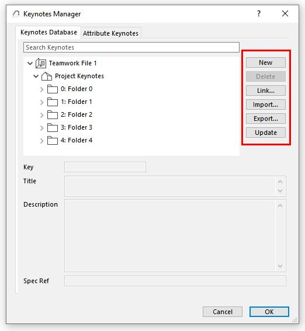
标准的 Teamwork 发送/接收功能同样适用；当相应的 Teamwork 用户执行 Release 时，Keynotes 数据库也会随之更新。
Teamwork 权限：
请注意，在 BimCloud Manager 的 Teamwork ‘Roles’（角色）设置中，务必指派同时具备 ‘Classifications and Properties’（分类与属性）Create 和 Delete/Modify 权限的角色。这一指派决定了哪些 ‘Roles’ 可以在 Teamwork 项目中修改和编辑 Keynotes。
*请注意，BIMCloud Teamwork 中 ‘Draftsman’（绘图员）角色的默认设置并未启用 ‘Classifications and Properties’ 的 Create 或 Delete/Modify 权限；如有需要，应相应修改该角色。
审核标签（Audit Labels）
审核标签时，务必确保 Keynote 标签已被预留。
为便于使用，Keynotes 菜单在 CITools 下拉菜单项下新增了若干功能。它们是：
- 预留项目中所有标签（Reserve all Labels in the Project）
- 释放项目中所有标签（Release all Labels in the Project）
- 预留视图中所有 Keynotes（Reserve All Keynotes in the View）
- 释放视图中所有 Keynotes（Release all Keynotes in the View）
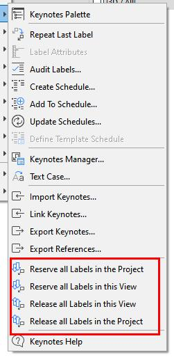
审核标签时，用户可以审核某个视图中的所有标签，也可以审核整个 Teamwork 项目的全部标签。请注意，审核后需要释放标签，其他用户才能对其做任何更改。
Reservation
As with all tools in the Teamwork environment, the first thing to understand is that to be able to make any changes, it needs to be Reserved.
This is done by selecting the ‘Reserve’ button located at the bottom right of the Keynotes Palette (to display the Keynotes Palette it can be activated as usual by activating the CI Tools drop-down in the Menu tab at the top of the screen).
Once the Keynotes Palette has been Reserved, changes can be made to the Keynotes Database. The changes that can be made are determined by your permissions on the BIMCloud server as mentioned below. The Reserve Button has now been replaced with a Release Button. After Editing, Adding, Deleting or Auditing Keynote Labels, it is necessary to Release the Keynotes for other users to be able to Edit the Keynotes Database.
Note:
Please note that there is not a Request button available at this stage, and the Teamwork user that has it reserved, will have to be asked to Release using the standard Teamwork messaging system to Release Keynotes.
While the Keynotes Palette is reserved, a ‘Reserved by’ dialogue at the bottom of the Keynotes palette will display the user-name of the Teamwork user that has it Reserved to all other users in the Project.
Similar to the Solo Project environment, the Keynotes manager can be activated with the Keynotes manager button on the top right of the Keynotes palette or alternatively through the CITools Drop down under the Keynotes Menu Item.
All the standard Keynote Editing functionality is then available from this interface:
- New
- Delete
- Link
- Import
- Export
- Update
...as shown in the Image below:
The Standard Teamwork Send and Receive functionality applies, and the Keynotes Database is also updated when it is Released by the respective Teamwork user.
Teamwork Permissions:
Please note that it is important to assign permissions that enable both Create and Delete/Modify of ‘Classifications and Properties’ in the Teamwork ‘Roles’ settings on your BimCloud Manager. This assignment determines which ‘Roles’ will be able to modify and edit Keynotes on the Teamwork Project.
*Please be aware that the default BIMCloud Teamwork settings for the role of ‘Draftsman’ does NOT have the Create or Delete/Modify for ‘Classifications and Properties’ enabled, if this is required the Role should be modified accordingly.
Audit Labels
When auditing labels, it is important to have the Keynote Labels reserved.
For ease of use, a few new functions have been added to the Keynote Menu under the CITools drop- down menu item.
These are:
- Reserve all Labels in the Project
- Release all Labels in the Project
- Reserve All Keynotes in the View
- Release all Keynotes in the View
When auditing labels, the user can audit all labels in a View, or in the entire Teamwork Project as a whole. Please note that labels will need to be Released after auditing for other users to be able to make any changes to them.
英文原文对照Official English Original
Reservation
As with all tools in the Teamwork environment, the first thing to understand is that to be able to make any changes, it needs to be Reserved.
This is done by selecting the ‘Reserve’ button located at the bottom right of the Keynotes Palette (to display the Keynotes Palette it can be activated as usual by activating the CI Tools drop-down in the Menu tab at the top of the screen).
Once the Keynotes Palette has been Reserved, changes can be made to the Keynotes Database. The changes that can be made are determined by your permissions on the BIMCloud server as mentioned below. The Reserve Button has now been replaced with a Release Button. After Editing, Adding, Deleting or Auditing Keynote Labels, it is necessary to Release the Keynotes for other users to be able to Edit the Keynotes Database.
Note:
Please note that there is not a Request button available at this stage, and the Teamwork user that has it reserved, will have to be asked to Release using the standard Teamwork messaging system to Release Keynotes.
While the Keynotes Palette is reserved, a ‘Reserved by’ dialogue at the bottom of the Keynotes palette will display the user-name of the Teamwork user that has it Reserved to all other users in the Project.
Similar to the Solo Project environment, the Keynotes manager can be activated with the Keynotes manager button on the top right of the Keynotes palette or alternatively through the CITools Drop down under the Keynotes Menu Item.
All the standard Keynote Editing functionality is then available from this interface:
- New
- Delete
- Link
- Import
- Export
- Update
...as shown in the Image below:
The Standard Teamwork Send and Receive functionality applies, and the Keynotes Database is also updated when it is Released by the respective Teamwork user.
Teamwork Permissions:
Please note that it is important to assign permissions that enable both Create and Delete/Modify of ‘Classifications and Properties’ in the Teamwork ‘Roles’ settings on your BimCloud Manager. This assignment determines which ‘Roles’ will be able to modify and edit Keynotes on the Teamwork Project.
*Please be aware that the default BIMCloud Teamwork settings for the role of ‘Draftsman’ does NOT have the Create or Delete/Modify for ‘Classifications and Properties’ enabled, if this is required the Role should be modified accordingly.
Audit Labels
When auditing labels, it is important to have the Keynote Labels reserved.
For ease of use, a few new functions have been added to the Keynote Menu under the CITools drop- down menu item.
These are:
- Reserve all Labels in the Project
- Release all Labels in the Project
- Reserve All Keynotes in the View
- Release all Keynotes in the View
When auditing labels, the user can audit all labels in a View, or in the entire Teamwork Project as a whole. Please note that labels will need to be Released after auditing for other users to be able to make any changes to them.
手动创建 Keynotes 数据库
Manually start a Keynotes Database
要开始创建一个新数据库：
- 打开 Keynotes 面板： Cadimage>Keynotes>Keynote Palette
**
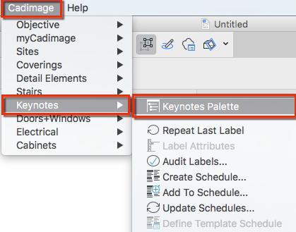
**
1.点击下面高亮的 New（新建）按钮：
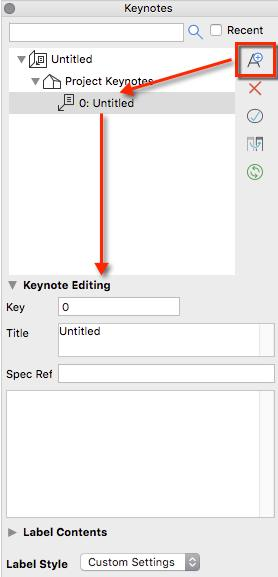
这会创建一个名为 Untitled（未命名）、Key = 0 的新数据库条目。在 Keynote Editing 折叠区中你可以编辑这些内容。
一个 keynote 由四部分组成：
- Key（编号）——你所引用的代码
- Title（标题）——注释的标题
- Spec（规范）——可引用外部规范参考
- Description（描述）——你所标注条目的详细说明或规范说明
你可以创建更多内容，并拖放这些条目以组成你偏好的结构。
To start a new database:
- Open the Keynote Palette: Cadimage>Keynotes>Keynote Palette
**
**
1.Click the New button highlighted below:
This creates a new database entry called Untitled with the Key = 0. In the Keynote Editing twirl down you can edit this content.
A keynote consists of four parts:
- Key – the code you refer to
- Title – the title for your note
- Spec – this can refer to an external specification reference
- Description – the detailed description or specification of the item you are notating
You can create additional content and drag and drop the entries to form your preferred structure.
英文原文对照Official English Original
To start a new database:
- Open the Keynote Palette: Cadimage>Keynotes>Keynote Palette
**
**
1.Click the New button highlighted below:
This creates a new database entry called Untitled with the Key = 0. In the Keynote Editing twirl down you can edit this content.
A keynote consists of four parts:
- Key – the code you refer to
- Title – the title for your note
- Spec – this can refer to an external specification reference
- Description – the detailed description or specification of the item you are notating
You can create additional content and drag and drop the entries to form your preferred structure.
Masterspec 的 MasterKey Keynote
Masterspec’s MasterKey Keynote
有关 MasterKey 的更多信息，请参阅 masterspec 网站：https://masterspec.co.nz/MasterKey-On-ArchiCAD/6820/
请确保你具备以下条件：
- Cadimage Keynotes
- 请联系 https://masterspec.co.nz/ 以激活 MasterSpec 与 Masterkey 订阅
在 ARCHICAD 中打开 Keynotes Manager（Keynotes 管理器），进入 Cadimage> Keynotes> Keynotes Manager
- Keynotes Manager 打开后，点击 Keynotes Database（Keynotes 数据库）
- 点击 Link（链接）——这将打开 Select Import Source（选择导入来源）窗口。
- 在该窗口中选择你的来源，本例中为 “A Masterspec project”（一个 Masterspec 项目）
- 使用与你登录 Masterspec 时相同的邮箱和密码登录 https://masterspec.co.nz/
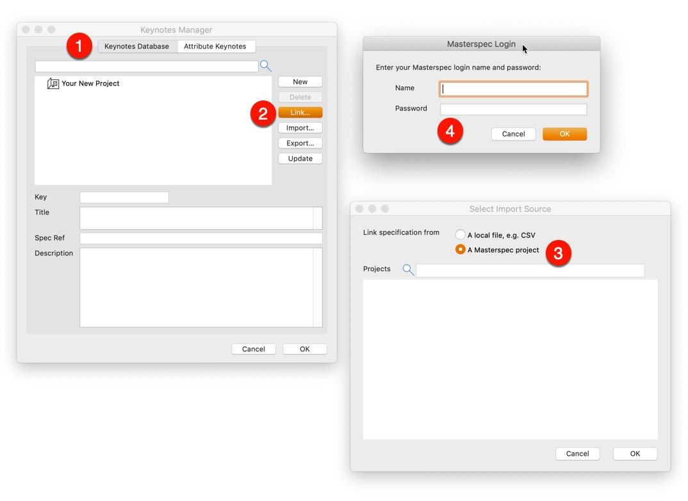
成功登录后，你会看到你当前用 Masterspec 编写的项目规范清单。
选择其中一个项目规范，然后点击 OK
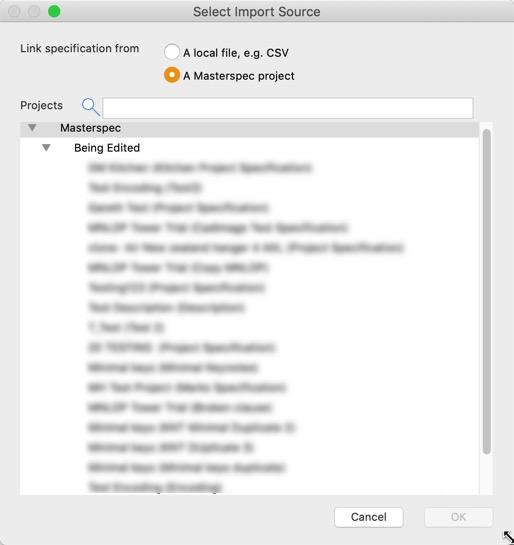
在下一个窗口中，检查你要导入的 Keynotes，然后点击 ok
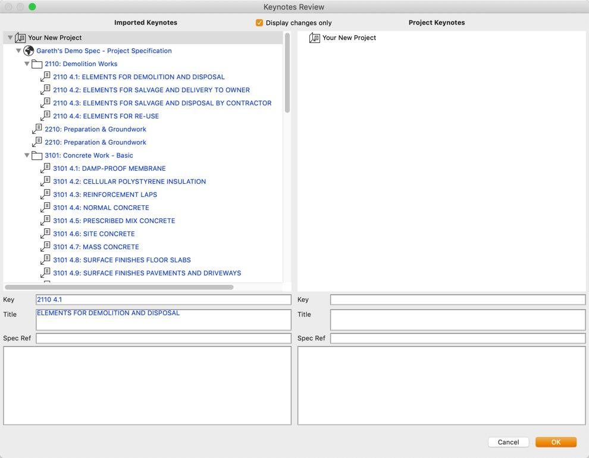
再次点击 OK 关闭 Keynotes Manager。
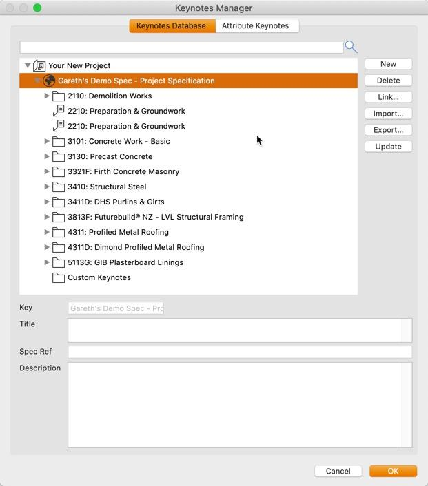
现在你应该能够在 ARCHICAD 中把 Masterspec 的规范选项作为 Keynotes 来访问。
当你需要从 Masterspec 规范更新 keynotes 数据库时，点击 **
Update all linked keynotes,（更新所有链接的 keynotes）检查更改，并在 Keynotes Review**（Keynotes 审阅）窗口上点击 ok。
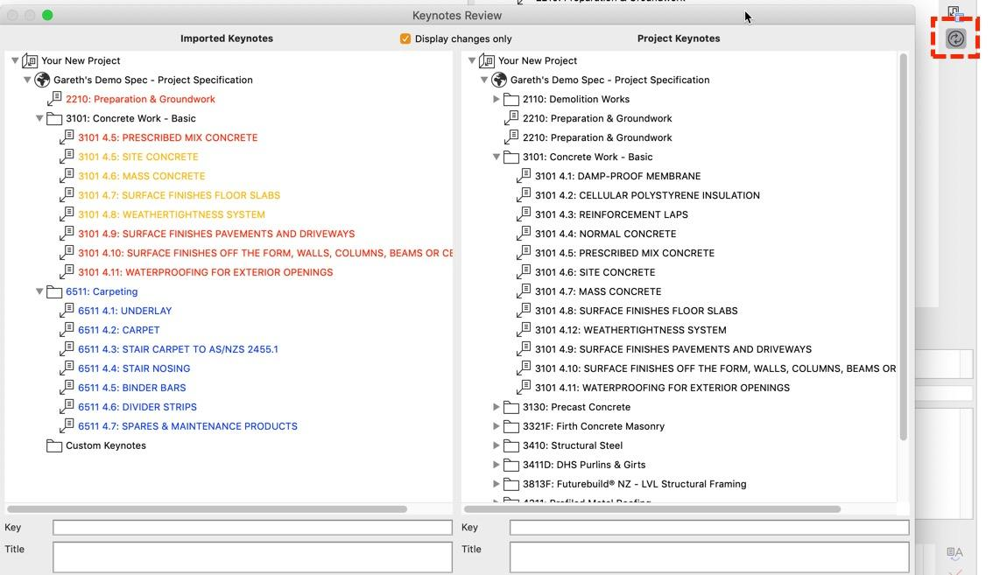
蓝色 - 已添加到你的规范，将被添加到你的 Keynotes 数据库
红色 - 已从规范中删除，将从你的 Keynotes 数据库中删除。
黄色 - 规范中的内容已更新，将更新到你的 Keynotes 数据库。
请注意，如果你删除/添加/更改了任何已作为标签放置的 Keynotes，你需要运行 Cadimage> Keynotes> Audit Labels…（审核标签）工具，以确保所有标签都被更新。Audit Labels 工具会给你选项，可以移除标签，或用另一个替代已删除的 keynote。
For more info on MasterKey please refer to the masterspec website: https://masterspec.co.nz/MasterKey-On-ArchiCAD/6820/
Please ensure you have the following:
- Cadimage Keynotes
- Activate MasterSpec & Masterkey subscriptions please contact https://masterspec.co.nz/
Open the Keynotes Manager in ARCHICAD, go to Cadimage> Keynotes> Keynotes Manager
- Once the Keynotes Manager is open click on Keynotes Database
- Click on Link - This will open the Select Import Source window.
- In the window select your source in this case, it will be the "A Masterspec project"
- Log in using the same email and password you use to log into Masterspec https://masterspec.co.nz/
Once you've signed in successfully you'll see a list of your current project specifications that you've been writing with Masterspec.
Select one of your project specs and click OK
In the next window, review the Keynotes your importing and then click ok
Click OK once more to close the Keynotes Manager.
You should now be able to access your Masterspec specification selections as Keynotes in ARCHICAD.
When you need to update the keynotes database from your Masterspec specification, click on **
Update all linked keynotes,review the changes and click ok on the Keynotes Review** window.
Blue - Added to your spec and will be added to your Keynotes Database
Red - Deleted from the spec and will be deleted to your Keynotes Database.
Yellow - Content updated in your spec and will be updated to your Keynotes Database.
Note if you delete / add / change any Keynotes that are already placed as labels, you'll need to run the Cadimage> Keynotes> Audit Labels… tool to ensure all Labels are updated. The Audit Labels tool will give you the option to remove the label or replace the deleted keynote with an alternative.
英文原文对照Official English Original
For more info on MasterKey please refer to the masterspec website: https://masterspec.co.nz/MasterKey-On-ArchiCAD/6820/
Please ensure you have the following:
- Cadimage Keynotes
- Activate MasterSpec & Masterkey subscriptions please contact https://masterspec.co.nz/
Open the Keynotes Manager in ARCHICAD, go to Cadimage> Keynotes> Keynotes Manager
- Once the Keynotes Manager is open click on Keynotes Database
- Click on Link - This will open the Select Import Source window.
- In the window select your source in this case, it will be the "A Masterspec project"
- Log in using the same email and password you use to log into Masterspec https://masterspec.co.nz/
Once you've signed in successfully you'll see a list of your current project specifications that you've been writing with Masterspec.
Select one of your project specs and click OK
In the next window, review the Keynotes your importing and then click ok
Click OK once more to close the Keynotes Manager.
You should now be able to access your Masterspec specification selections as Keynotes in ARCHICAD.
When you need to update the keynotes database from your Masterspec specification, click on **
Update all linked keynotes,review the changes and click ok on the Keynotes Review** window.
Blue - Added to your spec and will be added to your Keynotes Database
Red - Deleted from the spec and will be deleted to your Keynotes Database.
Yellow - Content updated in your spec and will be updated to your Keynotes Database.
Note if you delete / add / change any Keynotes that are already placed as labels, you'll need to run the Cadimage> Keynotes> Audit Labels… tool to ensure all Labels are updated. The Audit Labels tool will give you the option to remove the label or replace the deleted keynote with an alternative.
概述
Overview
Cadimage Keynotes 让你可以轻松快捷地为文档添加注释：它提供了一个创建注释数据库的框架——你也可以导入已有的数据库。除了放置单条注释之外，还可以根据构件的属性（墙体、楼板、屋顶等）设置注释自动附加到相应构件上。
Keynotes 由四部分组成：
- Key（编号）——你所引用的代码
- Title（标题）——注释的标题
- Spec（规范）——可引用外部规范参考
- Description（描述）——你所标注条目的详细说明或规范说明
Keynotes 可以以包含上述全部内容的完整注释形式放置到文档上，也可以只放置其中部分内容，还可以将其隐藏。之后所有 keynotes 都可以汇总并排入单个布局上的明细表，或作为完整的规范清单。
Cadimage Keynotes allows you to annotate your document easily and quickly by providing a framework to create a database of notes – or you can import an existing database. As well as placing individual notes, they can also be set to automatically attach to elements (wall, slab, roof etc) based on their attributes.
Keynotes consist of four parts:
- Key – the code you refer to
- Title – the title for your note
- Spec – this can refer to an external specification reference
- Description – the detailed description or specification of the item you are notating
Keynotes can be placed on the documents with a full note containing all of the above items or a selection of the items or they can be hidden. All keynotes can then be collated and scheduled on individual layouts or as a complete specification listing.
英文原文对照Official English Original
Cadimage Keynotes allows you to annotate your document easily and quickly by providing a framework to create a database of notes – or you can import an existing database. As well as placing individual notes, they can also be set to automatically attach to elements (wall, slab, roof etc) based on their attributes.
Keynotes consist of four parts:
- Key – the code you refer to
- Title – the title for your note
- Spec – this can refer to an external specification reference
- Description – the detailed description or specification of the item you are notating
Keynotes can be placed on the documents with a full note containing all of the above items or a selection of the items or they can be hidden. All keynotes can then be collated and scheduled on individual layouts or as a complete specification listing.
ProKit Keynotes - 从这里开始
ProKit Keynotes - Start here
ProKit Keynotes 让你可以添加一个注释数据库，该数据库可在整个项目中通用；它们可以以多种方式生成明细表，甚至可以在项目之间传输。
这意味着信息可以在一个地方修改和修订，并贯穿整个项目。
也可以把 ProKit Keynotes 关联到 Archicad 中任意的属性（Attribute）上，并自动为这些属性添加标签（Label）。
Libpack 加载（自 ARCHICAD 29 起）
需要注意的是，ProKit Keynotes 工具要求手动把 Keynotes Libpack 加载到项目中。
与所有库一样，这需要通过 Library Manager（库管理器）完成。请注意，已加载的 Libpack 需要在单个文件层级上选择，而不能像早期 Archicad 版本那样在文件夹层级上选择。
Library Manager 可通过 File>Library Manager 下拉菜单访问。

进入 Library Manager 后，我们使用 “Add” 按钮添加 Keynotes Libpack。

这样就可以导航到位于 ARCHICAD 安装文件夹中的 ProKit Libpack 文件夹。
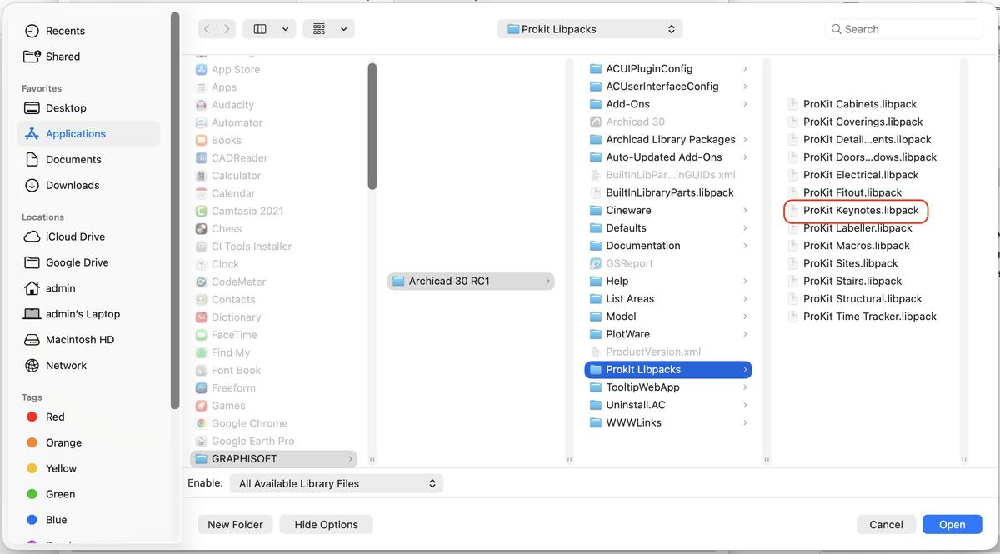
这将加载 Keynotes Libpack 及相关的宏（Macros）。
添加 Keynote
请注意，所有 Keynotes 都通过 Keynotes 下拉菜单管理：ProKit>Keynotes>Keynotes Palette（Keynotes 面板）。
通过点击 ProKit 下拉菜单并选择 Keynote Palette（Keynote 面板），即可添加 Keynotes。
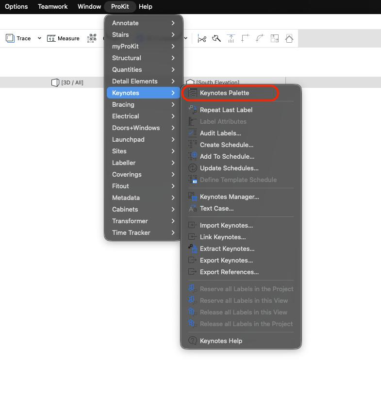
使用 A+ 按钮添加 Keynotes 并修改其内容。
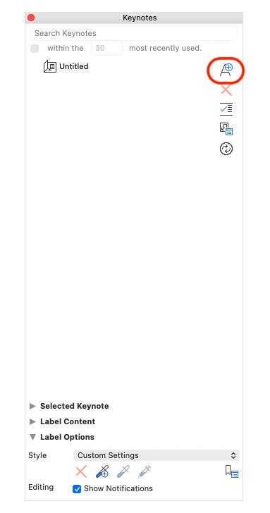
这将添加该 Keynote。
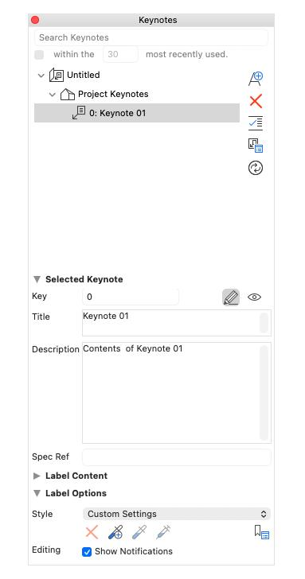
放置 Keynote 时，使用 Archicad 的 Label Tool（标签工具），但要选择 ProKit Label。
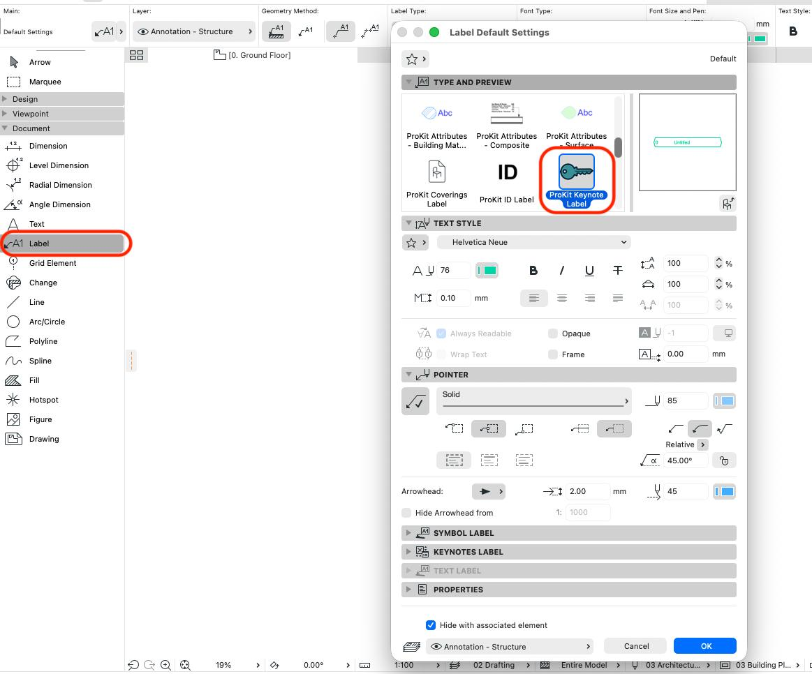
放置 Keynote 的方法：在面板中双击该注释（Note），然后把它放到期望的位置。
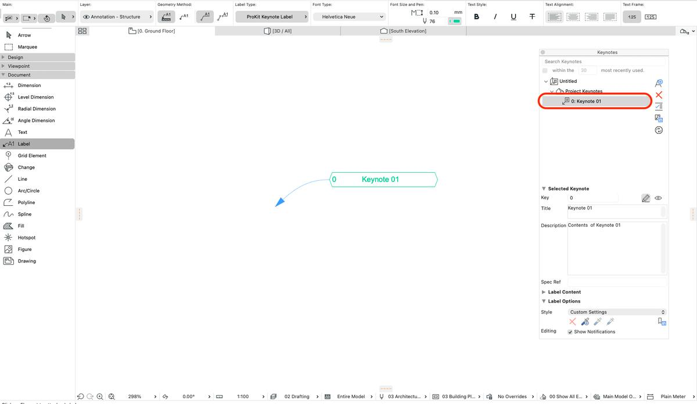
关于 Keynotes 工具各项功能的更多详细信息，请参阅知识库（Knowledge-base）中的相关文章。
ProKit Keynotes allows you to add a database of notes that can be used throughout your project, they can be scheduled in various ways, and even transferred from one project to another.
This means that information can be altered and revised in one place, and permeate throughout the project.
It is also Possible to associate ProKit Keynotes to any Attributes in Archicad and automatically label these Attributes.
Libpack loading (since ARCHICAD 29)
It is important to note that the ProKit Keynotes Tool requires the Keynotes Libpack to be manually loaded into the project.
As with all Libraries this is done through the Library Manager. Please note that the Libpacks that are loaded need to be selected at an individual file and not at a folder level as was the case in earlier Archicad versions.
The Library Manager is accessed through the File>Library Manager dropdown.
Once in the Library Manager we will use the “Add” button to add the Keynotes Libpack.
This allows navigation to the ProKit Libpack folder located in the ARCHICAD installation folder.
This will load the Keynotes Libpack and associated Macros.
Adding a Keynote
Please note that all Keynotes are managed from the Keynotes dropdown menu, ProKit>Keynotes>Keynotes Palette.
By then clicking on the ProKit dropdown and selecting the Keynote Palette Keynotes can be added.
Use the A+ to add Keynotes and change the contents.
This will add the Keynote.
To Place a Keynote, we use the Archicad Label Tool, but select the ProKit Label.
To Place the Keynote, Double Click on the Note in the Palette and place it in the desired position.
For more detailed information on each Keynotes Tool feature, please see the articles on the Knowledge-base.
英文原文对照Official English Original
ProKit Keynotes allows you to add a database of notes that can be used throughout your project, they can be scheduled in various ways, and even transferred from one project to another.
This means that information can be altered and revised in one place, and permeate throughout the project.
It is also Possible to associate ProKit Keynotes to any Attributes in Archicad and automatically label these Attributes.
Libpack loading (since ARCHICAD 29)
It is important to note that the ProKit Keynotes Tool requires the Keynotes Libpack to be manually loaded into the project.
As with all Libraries this is done through the Library Manager. Please note that the Libpacks that are loaded need to be selected at an individual file and not at a folder level as was the case in earlier Archicad versions.
The Library Manager is accessed through the File>Library Manager dropdown.
Once in the Library Manager we will use the “Add” button to add the Keynotes Libpack.
This allows navigation to the ProKit Libpack folder located in the ARCHICAD installation folder.
This will load the Keynotes Libpack and associated Macros.
Adding a Keynote
Please note that all Keynotes are managed from the Keynotes dropdown menu, ProKit>Keynotes>Keynotes Palette.
By then clicking on the ProKit dropdown and selecting the Keynote Palette Keynotes can be added.
Use the A+ to add Keynotes and change the contents.
This will add the Keynote.
To Place a Keynote, we use the Archicad Label Tool, but select the ProKit Label.
To Place the Keynote, Double Click on the Note in the Palette and place it in the desired position.
For more detailed information on each Keynotes Tool feature, please see the articles on the Knowledge-base.
发行说明 - Keynotes
Release Notes - Keynotes
发行说明 - Keynotes - 6.40
缺陷
KNT-438 同一文件内 keynotes 明细表在布局页面之间分配不均
KNT-495 Keynotes 标签文字溢出边框
KNT-509 Teamwork 中 Reserve 按钮被临时禁用
KNT-510 为其他用户授予 Reserve 权限时，Keynotes 未推送到 Teamwork
KNT-514 清空搜索框并输入新文本时，面板中的搜索框失去焦点
KNT-517 并非所有 Keynotes 都被排入明细表
改进
KNT-38 应用标签样式的过程繁琐
KNT-474 标签和明细表对象新增选项，可为注释的各部分设置大小写
大型功能
KNT-485 Keynotes 的 Teamwork 支持
Release notes - Keynotes - 6.40
Bug
KNT-438 keynotes schedule not equally divided between layout pages in one file
KNT-495 Keynotes label text oozes out of frame
KNT-509 Reserve button temporarily Disabled in Teamwork
KNT-510 Keynotes not pushed to Teamwork when Granting access for other user to Reserve
KNT-514 Searchbox in Palette loses focus when clearing the box and entering new text
KNT-517 Not all Keynotes Scheduled on Layout
Improvement
KNT-38 Applying Label Styles long winded
KNT-474 Options in the label and schedule objects, to set case for parts of the note
Epic
KNT-485 Teamwork for Keynotes
英文原文对照Official English Original
Release notes - Keynotes - 6.40
Bug
KNT-438 keynotes schedule not equally divided between layout pages in one file
KNT-495 Keynotes label text oozes out of frame
KNT-509 Reserve button temporarily Disabled in Teamwork
KNT-510 Keynotes not pushed to Teamwork when Granting access for other user to Reserve
KNT-514 Searchbox in Palette loses focus when clearing the box and entering new text
KNT-517 Not all Keynotes Scheduled on Layout
Improvement
KNT-38 Applying Label Styles long winded
KNT-474 Options in the label and schedule objects, to set case for parts of the note
Epic
KNT-485 Teamwork for Keynotes
恢复 Keynotes 数据库
Restore Keynotes Database
在某些情况下（通常是 Keynote 从数据库中被删除时），Keynote 标签可能会变成孤立（Orphaned）状态。处于这种状态时，它们无法被更新或生成明细表。
在 CI Tools Keynotes 工具的语境中，孤立（Orphaned） 状态意味着某个标签没有“父级”——即它没有与项目数据库中的任何 Keynote 关联。
如果删除该注释并非有意为之，或者你本来只是想删掉它、但现在又想找回来，可以通过把注释数据库恢复为与另一个 Archicad 项目中所拥有的内容一致来实现。
要恢复 Keynotes 数据库，你可以使用先前保存过的“主（Master）”keynote 数据库，或者从另一个包含所需注释的 Archicad 项目中导出数据库。如果没有备份，也可以按照下面步骤使用 Bug 补丁。
如果你已经有可用的数据库或项目，请直接跳到导出 Keynotes或将 Keynotes 导入到有问题的项目中
BUG 补丁
- 首先，退出所有正在运行的 Archicad 26 或 27 会话。
- 使用下面的链接下载 BUG 补丁文件：Keynotes BUG 补丁文件
- 解压下载的文件——其中包含 2 个文件夹：Archicad 26 和 Archicad 27
- 在 Windows 中浏览到 C:\Program Files\GRAPHISOFT\ARCHICAD [version]，或在 Mac OS 中浏览到 Macintosh HD\Applications\Graphisoft\ARCHICAD [version]，然后进入 Add-Ons，再进入 CI Tools
- 删除已有的 Ci Tools Keynotes 文件
- 从下载的那套文件中把合适的（即版本与操作系统相匹配的）Ci Tools Keynotes 文件移动到 Add-Ons - Ci Tools 文件夹中。如果还在使用第二个 Archicad 版本，同样再操作一次。重要提示：在打开 Archicad 项目之前，务必先复制/备份一份，以确保有可回退的版本。
导出 Keynotes
打开包含所需 Keynotes 数据库的 Archicad 项目（可以是 .PLN 文件，也可以打开 Teamwork 项目），即 Keynote 当前显示正确的那个项目。
如果没有合适的 .pln 文件，可以打开 .bpn 文件（即项目备份文件），并尝试同样的流程：
- 点击 Ci Tools > Keynotes > Export Keynotes，导出 Keynotes 并保存为默认的 .keynotes 格式
- 然后选择一个便于访问的位置，输入文件名，确保选中 Keynotes 数据库格式，然后点击 OK
将 Keynotes 导入到需要它们的项目中
- 打开需要导入缺失注释的项目，选择 Ci Tools > Keynotes > Import Keynotes ：
- 选择要导入的数据库，然后点击 Open
- 选择要导入的注释（1），点击 Import 按钮（2），对所有想导入的注释重复此操作；或者直接点击 Import All 按钮（3），从源数据库导入全部注释。导入所需注释后，点击 OK（4）以完成整个过程
这将用可用的版本替换该文件中的 Keynotes。
如果这未能修复孤立注释，请向我们提交支持工单，并另存为 .pla 提供给支持团队，供我们的开发人员检查。
In certain circumstances - usually when a Keynote is Deleted from the database - Keynote Labels can become Orphaned. When they are in this state, they cannot be Updated or Scheduled.
In the context of the Ci Tools Keynotes tool, Orphaned status means that a Label has no 'parent' - i.e. it is not linked to any Keynote in the project database
If the deletion of the note was not intentional, or if you just meant to do it, but now want them back, you can do so by Restoring the note database to match what you have in a different Archicad Project.
To restore a Keynotes Database, you can either use a previously saved 'Master' keynote database, or export the database from a different Archicad project you have that contains the notes you want. If a backup is unavailable,it's possible to use a Bug patch in the steps outlined below.
If you already have a database or project to use, skip toExport KeynotesorImport the Keynotes into the Issue Project
BUG Patch
- First, exit any Archicad 26 or 27 sessions you have running.
- Download the BUG patch files using the link below: Keynotes BUG Patch Files
- Unzip the downloaded file - it will contain 2 folders - Archicad 26 and Archicad 27
- Browse to C:\Program Files\GRAPHISOFT\ARCHICAD [version] in Windows, or Macintosh HD\Applications\Graphisoft\ARCHICAD [version] in Mac OS Then go to Add-Ons and then CI Tools
- Delete the existing Ci Tools Keynotes file
- Move the appropriate (i.e. the matching Archicad versions and operating system) Ci Tools Keynotes file from the downloaded set into the Add-Ons - Ci Tools folder Do the same again for the second Archicad version as well if in use. IMPORTANT: Make a copy/backup of your Archicad project before opening it to ensure you have a fallback.
Export Keynotes
Open the Archicad project (either the .PLN file or open the Teamwork project) that contains the required Keynotes Database. i.e. where the Keynotes currently appear correctly.
If there is no suitable .pln available you can open the .bpn file which is the project back up file, and attempt the same process:
- Export the Keynotes and save as the default .keynotes format by clicking on Ci Tools > Keynotes > Export Keynotes
- Then choose a location you can easily access, enter a filename, ensure that the Keynotes Database format is selected, and then hit OK
Import the Keynotes into the Project that needs them
- Open the project that you need to import the missing notes to, and select Ci Tools > Keynotes > Import Keynotes :
- Select the database you want to import, and then hit Open
- Select the Notes you want to import (1), and hit the Import button (2), and go through all the notes you want to bring in and do the same, or simply hit the Import All button (3) to bring in all the notes from the source database. Once you have imported the notes you want, click OK (4) to complete the process
This will replace the Keynotes in the file with a working version.
If this does not fix your orphaned notes, log a support ticket with us, and save as .pla and provide to support for our developers to inspect.
英文原文对照Official English Original
In certain circumstances - usually when a Keynote is Deleted from the database - Keynote Labels can become Orphaned. When they are in this state, they cannot be Updated or Scheduled.
In the context of the Ci Tools Keynotes tool, Orphaned status means that a Label has no 'parent' - i.e. it is not linked to any Keynote in the project database
If the deletion of the note was not intentional, or if you just meant to do it, but now want them back, you can do so by Restoring the note database to match what you have in a different Archicad Project.
To restore a Keynotes Database, you can either use a previously saved 'Master' keynote database, or export the database from a different Archicad project you have that contains the notes you want. If a backup is unavailable,it's possible to use a Bug patch in the steps outlined below.
If you already have a database or project to use, skip toExport KeynotesorImport the Keynotes into the Issue Project
BUG Patch
- First, exit any Archicad 26 or 27 sessions you have running.
- Download the BUG patch files using the link below: Keynotes BUG Patch Files
- Unzip the downloaded file - it will contain 2 folders - Archicad 26 and Archicad 27
- Browse to C:\Program Files\GRAPHISOFT\ARCHICAD [version] in Windows, or Macintosh HD\Applications\Graphisoft\ARCHICAD [version] in Mac OS Then go to Add-Ons and then CI Tools
- Delete the existing Ci Tools Keynotes file
- Move the appropriate (i.e. the matching Archicad versions and operating system) Ci Tools Keynotes file from the downloaded set into the Add-Ons - Ci Tools folder Do the same again for the second Archicad version as well if in use. IMPORTANT: Make a copy/backup of your Archicad project before opening it to ensure you have a fallback.
Export Keynotes
Open the Archicad project (either the .PLN file or open the Teamwork project) that contains the required Keynotes Database. i.e. where the Keynotes currently appear correctly.
If there is no suitable .pln available you can open the .bpn file which is the project back up file, and attempt the same process:
- Export the Keynotes and save as the default .keynotes format by clicking on Ci Tools > Keynotes > Export Keynotes
- Then choose a location you can easily access, enter a filename, ensure that the Keynotes Database format is selected, and then hit OK
Import the Keynotes into the Project that needs them
- Open the project that you need to import the missing notes to, and select Ci Tools > Keynotes > Import Keynotes :
- Select the database you want to import, and then hit Open
- Select the Notes you want to import (1), and hit the Import button (2), and go through all the notes you want to bring in and do the same, or simply hit the Import All button (3) to bring in all the notes from the source database. Once you have imported the notes you want, click OK (4) to complete the process
This will replace the Keynotes in the file with a working version.
If this does not fix your orphaned notes, log a support ticket with us, and save as .pla and provide to support for our developers to inspect.
在 ARCHICAD 19 及更早版本中恢复已删除的 KeynoteAC19
Restore a deleted Keynote in ARCHICAD 19 and previous versions.AC19
当一个 keynote 被删除时，它并未从数据库中移除——这意味着你随时都可以轻松恢复条目。
要恢复一个 Keynote：
- 在 ARCHICAD 中打开 Keynotes 面板（进入 Cadimage> Keynotes> Keynotes Palette）
- 把 Status（状态）改为 ‘Deleted’（已删除），即可查看已删除的 Keynotes：
提示： 选择状态 ‘All’（全部）可同时查看当前和已删除的 keynotes。
提示： 已删除的 Keynotes 会以斜体显示，便于你在 Keynotes 列表中识别。
- 选中你想恢复的已删除 Keynote
- 点击 Restore button（恢复按钮）来恢复该 Keynote：
现在你应该能在原来的位置看到已删除的 Keynote：
When a keynote is deleted it is not removed from the database - that means you can easily restore items at any time.
To restore a Keynote:
- Open the Keynotes Palette in ARCHICAD (go to Cadimage> Keynotes> Keynotes Palette)
- View deleted Keynotes by changing the Status to 'Deleted':
TIP: Select the status 'All' to view both current and deleted keynotes.
TIP: Deleted Keynotes will appear in Italics to help identify them in your Keynotes list.
- Select the deleted Keynote that you want to restore
- Click the Restore button to restore the Keynote:
You should now see your deleted Keynote back in its original position:
英文原文对照Official English Original
When a keynote is deleted it is not removed from the database - that means you can easily restore items at any time.
To restore a Keynote:
- Open the Keynotes Palette in ARCHICAD (go to Cadimage> Keynotes> Keynotes Palette)
- View deleted Keynotes by changing the Status to 'Deleted':
TIP: Select the status 'All' to view both current and deleted keynotes.
TIP: Deleted Keynotes will appear in Italics to help identify them in your Keynotes list.
- Select the deleted Keynote that you want to restore
- Click the Restore button to restore the Keynote:
You should now see your deleted Keynote back in its original position:
使用主控明细表定义并同步 Keynotes 明细表设置
Using Master Schedules to define and sync Keynote Schedule Settings
如果你想为 Keynotes 明细表定义自定义设置，以便在放置每个明细表后不必逐一修改，可以使用主控明细表（Master Schedule）来设置并统一应用到你所有明细表上的明细表设置。
- 首先，打开你要使用的主控布局（Master layout）。所有使用该主控的布局都会继承你在这里指定的明细表设置，即：
（你也可以稍后把它们添加到其他主控上，但我们得先从某处开始）
- 使用对象工具（Object tool）找到 Keynotes 明细表对象——它位于 Ci Tools 库文件夹下的 Keynotes 中：
- 将此对象的设置改为你希望使用的——即定义画笔（pens）、字体、字号等……然后把该对象放在主控布局上你希望它在图纸中出现的位置。注意：把它放在 Archicad 图层（layer）上是个好主意，这样你就不必记住它在哪一层。
- 放置完成后，选中该对象并重新打开设置，在这里勾选 Hide the Schedule（隐藏明细表）复选框：
然后点击 OK（这只是隐藏明细表，使它不会出现在你没有放置明细表的布局上）
- 对其他任何希望具有可继承 Keynotes 明细表设置的主控布局，重复同样的过程（或者直接复制粘贴你刚放置的对象，如果你希望其他图纸使用相同设置的话）
现在我们已经设好了所需的默认设置，可以开始创建明细表：
- 打开你想创建明细表的布局，点击 CI Tools 菜单 - Keynotes - Create Schedule（创建明细表）
- 按你的喜好设置明细表设置，然后为了让它使用我们刚刚定义的主控设置，请确保选中 Apply Settings Of the schedule on the master layout（应用主控布局上明细表的设置）选项
- 点击 OK，你的明细表将使用你在主控上指定的设置放置
可选操作——如果你想同步主控上所做的更改，也可以做到——即在主控上更改设置后，运行一次更新，让这些设置传递到所有已放置的明细表上
要做到这一点，请确保在明细表设置中把 Apply Settings on Update（更新时应用设置）打开（默认应为开启）
该选项打开后，你会注意到其他所有设置都变成灰色不可用：
这是因为现在所有设置都由你的主控定义，因此不能在这里手动覆盖，除非你再次把“更新时应用”选项关闭
If you want to define customised settings for your Keynotes schedules so that you don't have to make changes to each one after placing it, you can use Master Schedules to set and enforce the schedule settings that should be used on all your schedules
- First, open the Master layout that you want to use. All layouts which use this master will inherit the Schedule Settings you specify here. i.e.
(You can add them to other masters as well later, but we need to start somewhere)
- Using the Object tool, find the Keynotes schedule object - it is in the Ci Tools Library folder, under Keynotes:
- Set the settings in this object to what you want to use - i.e. define the pens, fonts, font sizes etc... and then Place the object down on the master layout wherever you want it to be placed on your sheets Note: it's a good idea to place it on the Archicad layer so that you don't need to worry about remembering what layer it's on
- Once it's placed, select the object and re-open the settings, and tick the Hide the Schedule box here:
and then click OK (this just hides the schedule so that it won't show up on any layouts that you don't place schedules on)
- Repeat the same process for any other Master Layouts that you want to have inheritable Keynote Schedule settings (or simply copy and paste the object you just placed, if you want other sheets to have the same settings)
Now that we have set our desired default settings, we can create some schedules:
- Open the layout that you want to create a schedule on, and click on the CI Tools menu - Keynotes - Create Schedule
- Set the schedule settings as you like, and then to tell it to use the master settings we have just defined, make sure you select the option to Apply Settings Of the schedule on the master layout
- Hit OK and your schedule will be placed, using the settings you specified on the Master
Optionally - If you want to Sync changes made to your master, you can do that too - i.e. you can make a change to the settings on the Master, and then after running an update, have those settings filter through to all your already-placed schedules
To do that, make sure you set the Apply Settings on Update on in the schedule settings (it should be on by default)
When that option is turned on, you will notice that all other settings are Greyed Out:
This is because they are all being defined by your Master now, so can't be manually overridden here, unless you turn the option to apply on update back Off again
英文原文对照Official English Original
If you want to define customised settings for your Keynotes schedules so that you don't have to make changes to each one after placing it, you can use Master Schedules to set and enforce the schedule settings that should be used on all your schedules
- First, open the Master layout that you want to use. All layouts which use this master will inherit the Schedule Settings you specify here. i.e.
(You can add them to other masters as well later, but we need to start somewhere)
- Using the Object tool, find the Keynotes schedule object - it is in the Ci Tools Library folder, under Keynotes:
- Set the settings in this object to what you want to use - i.e. define the pens, fonts, font sizes etc... and then Place the object down on the master layout wherever you want it to be placed on your sheets Note: it's a good idea to place it on the Archicad layer so that you don't need to worry about remembering what layer it's on
- Once it's placed, select the object and re-open the settings, and tick the Hide the Schedule box here:
and then click OK (this just hides the schedule so that it won't show up on any layouts that you don't place schedules on)
- Repeat the same process for any other Master Layouts that you want to have inheritable Keynote Schedule settings (or simply copy and paste the object you just placed, if you want other sheets to have the same settings)
Now that we have set our desired default settings, we can create some schedules:
- Open the layout that you want to create a schedule on, and click on the CI Tools menu - Keynotes - Create Schedule
- Set the schedule settings as you like, and then to tell it to use the master settings we have just defined, make sure you select the option to Apply Settings Of the schedule on the master layout
- Hit OK and your schedule will be placed, using the settings you specified on the Master
Optionally - If you want to Sync changes made to your master, you can do that too - i.e. you can make a change to the settings on the Master, and then after running an update, have those settings filter through to all your already-placed schedules
To do that, make sure you set the Apply Settings on Update on in the schedule settings (it should be on by default)
When that option is turned on, you will notice that all other settings are Greyed Out:
This is because they are all being defined by your Master now, so can't be manually overridden here, unless you turn the option to apply on update back Off again
观看：10 分钟快速上手！
Watch: Get started in 10 minutes!
在这段视频中，Thomas 概述了 Keynotes 工具：
In this video, Thomas provides an overview of the Keynotes Tool:
英文原文对照Official English Original
In this video, Thomas provides an overview of the Keynotes Tool:
观看：Keynotes 工具入门（网络研讨会录像）
Watch: Introduction to the Keynotes Tool (webinar recording)
在这 30 分钟的网络研讨会中，Josh 将向你展示如何开始使用 Cadimage Keynotes 工具。具体来说，他向你展示了：
- 如何添加注释（通过导入和创建新注释）
- 你的注释标签中可以显示哪些内容
- 修改注释的外观
- 如何生成 Keynotes 明细表
In this 30-minute webinar, Josh shows you how to get started with the Cadimage Keynotes Tool. Specifically, he shows you:
- How to add notes (via importing and creating new notes)
- What content can be displayed in your note labels
- Modify the appearance of your notes
- How to generate your Keynote Schedule
英文原文对照Official English Original
In this 30-minute webinar, Josh shows you how to get started with the Cadimage Keynotes Tool. Specifically, he shows you:
- How to add notes (via importing and creating new notes)
- What content can be displayed in your note labels
- Modify the appearance of your notes
- How to generate your Keynote Schedule
使用与属性关联的 Keynotes
Working with Attribute linked Keynotes
我们可以通过把 Keynotes 指派给构件的属性（Attributes）来非常智能地使用 Keynotes。
该功能允许用户创建与项目中特定属性关联的注释，把这些 keynotes 指派给这些属性可提高效率。它还支持对收集在注释数据库中的信息进行更严格的管理——该数据库可集中管理，并可在不同项目之间移植。
创建注释：
在本教程中，我们创建了一些用于描述 Archicad 中可用属性的注释。
我们创建了这样一条注释，它将关联到：
- Building Material（建筑材料）
- Complex or Wall Profile（复合体或墙体轮廓）
- Surface Fill（表面填充）
- Line（线条）
下面我们把这些注释分别指派给我们选定的属性。
在 Keynotes 面板中激活 Keynotes 管理器，并切换到 Keynotes 属性选项卡，即进入一个对话框，我们可以把一条或多条 Keynotes 指派给 Archicad 中的一条或多条属性。
在本教程中，我们会使用一个穿过墙体的剖面，其中 2D 填充的填充类型为 ‘Hexagonal’（六边形），线条的线型为 ‘Bubble’（气泡）。这些可以是任意你选择的属性。
我们知道该墙体指派了以下属性：
- 轮廓为 ‘Brick Wall w Concrete Lintel’（砖墙带混凝土过梁）
- 表面为 “Stucco – Yellow Rough’（灰泥 – 黄色粗面）
- 并且该轮廓包含建筑材料 ‘Brick – Structural’（砖 – 结构用）
现在我们把 Keynotes 指派给这些属性。
在左侧选中要指派的 Keynote，并在右侧导航到 Building Materials（建筑材料），我们就可以进行选择。
然后我们可以从右侧展开的下拉列表中选择建筑材料：
点击 ‘Attach’（附加）按钮后，该注释就被附加到 Archicad 中的 ‘Building Material’ 属性上：
我们可以对填充、线型、表面和墙体轮廓重复这些步骤。
如果现在返回剖面视图，我们可以实现真正令人惊叹的效果。
选中所有构件后，执行 CITools 的 ‘Label Attributes’（标注属性）命令，标签就会根据所选构件自动放置，如下图所示：
结果如下。
可以看到，标签是根据标签设置放置的，其内容直接来自 Keynotes 管理器的 Attributes Keynotes 选项卡中附加的标签。
We can use Keynotes in a very intelligent way by assigning it to Attributes of Elements.
This functionality allows the user to create notes liked to specific attributes in the project, and assigning these keynotes to these attributes increases productivity. It also allows for more rigorous management of information captured in a database of notes that can be managed in one place and is portable between different projects.
Creating notes:
For the purposes of this tutorial we have created notes that describe the different attributes available in Archicad.
We have created a note that will be associated with:
- Building Material
- Complex or Wall Profile
- Surface Fill
- Line
We will now proceed to assign each of these to an Attribute of our choice.,
By activating the Keynotes manager in the Keynotes palette, and switching to the Keynotes attribute tab we are in a dialogue where we can assign one or more of these Keynotes to one or more of the Attributes in Archicad.
For the purposes of this tutorial, we will be using a Section through a wall with a 2D fill with fill type ‘Hexagonal’ and a line with line type ‘Bubble’. These can be any attributes of your choice.
We know that the wall has the following attributes assigned:
- A profile of ‘Brick Wall w Concrete Lintel’
- A surface of “Stucco – Yellow Rough’
- and the profile contains the Building Material ‘Brick – Structural’
We will now proceed to assign the Keynotes to the Attributes.
By selecting the Keynote to be assigned on the left and navigating to Building Materials on the right, we can make the selection.
We can then choose the Building Material from the expanded drop down on the right hand side:
By clicking the ‘Attach’ button the note is attached to the ‘Building Material’ Attribute in Archicad:
We can replicate these steps for the Fill, Line type, Surface and Wall profile.
If we now navigate back to the Section we can achieve something truly remarkable.
By selecting the CITools ‘Label Attributes’ command with all the elements selected, the Labels are automatically placed according to the Elements selected as shown below:
And the result is as follows.
As we can see the labels are placed based on the label settings and the contents is directly related to the labels attached in the Attributes Keynotes tab of the Keynotes manager.
英文原文对照Official English Original
We can use Keynotes in a very intelligent way by assigning it to Attributes of Elements.
This functionality allows the user to create notes liked to specific attributes in the project, and assigning these keynotes to these attributes increases productivity. It also allows for more rigorous management of information captured in a database of notes that can be managed in one place and is portable between different projects.
Creating notes:
For the purposes of this tutorial we have created notes that describe the different attributes available in Archicad.
We have created a note that will be associated with:
- Building Material
- Complex or Wall Profile
- Surface Fill
- Line
We will now proceed to assign each of these to an Attribute of our choice.,
By activating the Keynotes manager in the Keynotes palette, and switching to the Keynotes attribute tab we are in a dialogue where we can assign one or more of these Keynotes to one or more of the Attributes in Archicad.
For the purposes of this tutorial, we will be using a Section through a wall with a 2D fill with fill type ‘Hexagonal’ and a line with line type ‘Bubble’. These can be any attributes of your choice.
We know that the wall has the following attributes assigned:
- A profile of ‘Brick Wall w Concrete Lintel’
- A surface of “Stucco – Yellow Rough’
- and the profile contains the Building Material ‘Brick – Structural’
We will now proceed to assign the Keynotes to the Attributes.
By selecting the Keynote to be assigned on the left and navigating to Building Materials on the right, we can make the selection.
We can then choose the Building Material from the expanded drop down on the right hand side:
By clicking the ‘Attach’ button the note is attached to the ‘Building Material’ Attribute in Archicad:
We can replicate these steps for the Fill, Line type, Surface and Wall profile.
If we now navigate back to the Section we can achieve something truly remarkable.
By selecting the CITools ‘Label Attributes’ command with all the elements selected, the Labels are automatically placed according to the Elements selected as shown below:
And the result is as follows.
As we can see the labels are placed based on the label settings and the contents is directly related to the labels attached in the Attributes Keynotes tab of the Keynotes manager.
在 Keynotes 中使用分类
Working with Categories in Keynotes
本文将向你展示如何添加和管理 Keynote 分类：
要为你的 Keynotes 创建分类：
- 在 ARCHICAD 中，进入 Cadimage> Keynotes> Keynotes Palette

- 点击 A 按钮添加一条新注释：
在面板顶部的 ‘Database’（数据库）区域，你会注意到新分类已创建，其 Key = 0、Title = Untitled。我们将在下一步修改这些设置。
3 . 在面板下半部分的 Keynote Editing（Keynote 编辑）区域，把 ‘Key’ 旁的文本改为 ‘1’，把 ‘Title’ 改为 ‘General’（这将是你新分类的标题）
提示：我们不需要为 Spec 或 Description 添加内容，因为这些是用于实际的 Keynotes（注释）而非分类的：
创建子分类
要为你的 Keynotes 创建子分类：
- 使用 A 按钮创建一个新分类
- 输入相关的 Key（例如，如果该子分类要位于分类 1 之下，其 Key 可以是 1.01）：
- 在面板的 Database 区域中，选中你新建的子分类（按住 shift 多选）并拖放到所需的父分类上：
完成后，你会看到新的结构以及一个折叠按钮：
In this article we show you how to add and manage Keynote:
To create a Category for your Keynotes:
- In ARCHICAD, go to Cadimage> Keynotes> Keynotes Palette
- Click the A button to add a new note:
At the top of the palette, in the ‘Database’ area, you will notice that the new Category has been created with the Key = 0 and the Title = Untitled. We will change these settings in the next step.
3 . In the lower half of the palette, go to the Keynote Editing area and change the text next to ‘Key' to‘1’and ‘Title’to ‘General’(this will be the title of your new Category)
TIP: We do not need to add content to Spec or Description as these are used for the actual Keynotes – not Categories:
Creating a Sub-Category
To create a Sub-Category for your Keynotes:
- Create a new Category using the A button
- Enter a relevant Key (for example, if this sub-category is to sit under Category 1; the item Key might be 1.01):
- In the Database area of the Palette, select your new sub-categories (hold down shift to multi select) and drag and drop it onto the desired parent Category:
Once completed, you will see the new structure along with a twirl-down button:
英文原文对照Official English Original
In this article we show you how to add and manage Keynote:
To create a Category for your Keynotes:
- In ARCHICAD, go to Cadimage> Keynotes> Keynotes Palette
- Click the A button to add a new note:
At the top of the palette, in the ‘Database’ area, you will notice that the new Category has been created with the Key = 0 and the Title = Untitled. We will change these settings in the next step.
3 . In the lower half of the palette, go to the Keynote Editing area and change the text next to ‘Key' to‘1’and ‘Title’to ‘General’(this will be the title of your new Category)
TIP: We do not need to add content to Spec or Description as these are used for the actual Keynotes – not Categories:
Creating a Sub-Category
To create a Sub-Category for your Keynotes:
- Create a new Category using the A button
- Enter a relevant Key (for example, if this sub-category is to sit under Category 1; the item Key might be 1.01):
- In the Database area of the Palette, select your new sub-categories (hold down shift to multi select) and drag and drop it onto the desired parent Category:
Once completed, you will see the new structure along with a twirl-down button: